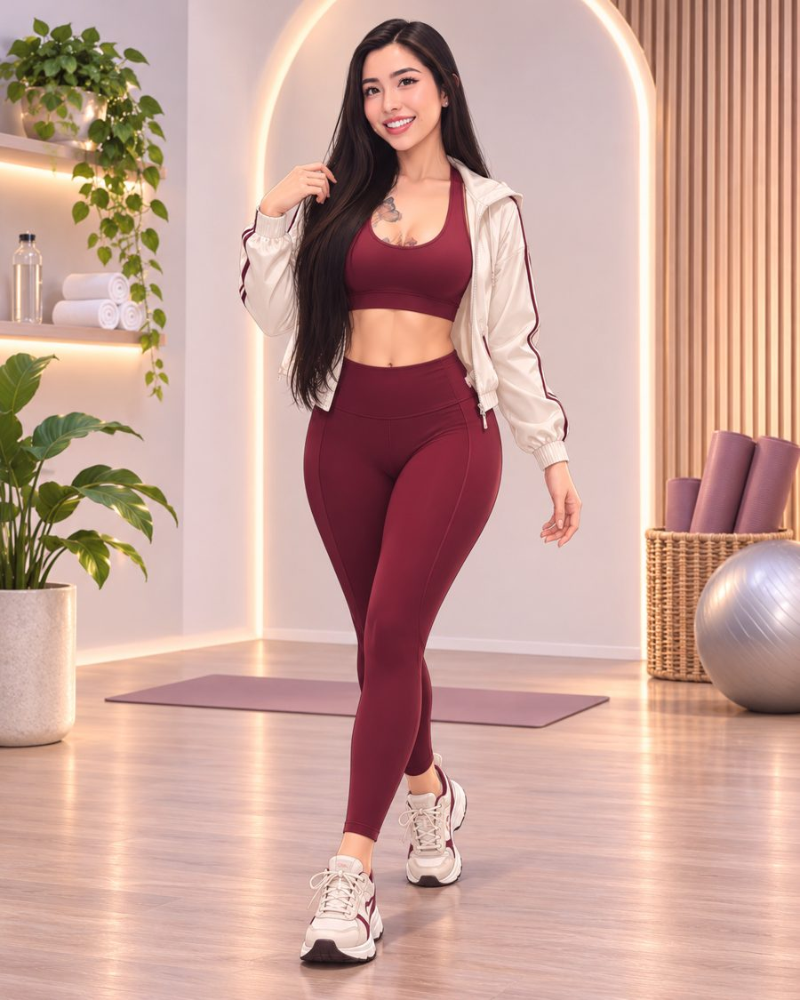

<!DOCTYPE html>
<html lang="en">
<head>
<meta charset="utf-8">
<meta name="viewport" content="width=device-width,initial-scale=1">
<title>English with Ben</title>
<link href="https://fonts.googleapis.com/css2?family=Baloo+2:wght@600;700;800&family=Nunito:wght@500;600;700;800&display=swap" rel="stylesheet">
<style>
:root{--bg:#F1F3FA;--surface:#fff;--surface2:#E9ECF7;--ink:#1B2148;--muted:#5A6285;--line:#DDE1F0;--accent:#3F78EA;--accent-d:#2C5BC4;--good:#2FA36B;--warn:#E89A2B;--bad:#E0566F;--teal:#2E9C97;--sun:#F7D154;--head:"Baloo 2","Nunito",system-ui,sans-serif}
*{box-sizing:border-box}
html,body{margin:0;background:var(--bg);color:var(--ink);font-family:"Nunito",system-ui,-apple-system,sans-serif;font-size:16px;line-height:1.45;font-weight:600}
button,select{font-family:inherit;font-size:1rem;cursor:pointer;color:inherit;font-weight:700}
#app{max-width:760px;margin:0 auto;padding:14px 14px 100px}
h2{font-family:var(--head);font-size:1.6rem;margin:6px 0 8px;line-height:1.15}
h3{font-family:var(--head);font-size:1.15rem;margin:0 0 4px}
.cap{font-family:var(--head);font-size:.82rem;letter-spacing:.14em;text-transform:uppercase;color:var(--muted);margin:22px 2px 10px;font-weight:700}
.card{background:var(--surface);border:2px solid var(--line);border-radius:22px;padding:16px;margin:10px 0;box-shadow:0 5px 0 var(--line)}
button.card{display:block;width:100%;text-align:center}
.row{display:flex;gap:8px;flex-wrap:wrap;align-items:center}.sb{justify-content:space-between}
.btn{background:var(--accent);color:#fff;border:0;border-radius:16px;padding:12px 18px;min-height:48px;box-shadow:0 4px 0 var(--accent-d);font-family:var(--head);font-size:1.05rem}
.btn:active{transform:translateY(3px);box-shadow:0 1px 0 var(--accent-d)}
.btn.alt{background:var(--surface);color:var(--ink);border:2px solid var(--line);box-shadow:0 4px 0 var(--line)}
.btn.bad{background:var(--bad);box-shadow:0 4px 0 #B83F56}.btn.warn{background:var(--warn);box-shadow:0 4px 0 #BE7A17}.btn.teal{background:var(--teal);box-shadow:0 4px 0 #1F7773}
.btn.sm{padding:6px 12px;min-height:38px;font-size:.92rem;border-radius:12px}.btn:disabled{opacity:.4}.wide{width:100%}.big3{font-size:1.25rem;min-height:56px}
.chip{display:inline-block;background:#FFF3C9;border-radius:999px;padding:3px 11px;font-size:.82rem;font-weight:700;margin:2px 4px 2px 0}.chip.g{background:#D3F0E0}.chip.r{background:#FBD9E0}
.muted{color:var(--muted);font-size:.92rem}.vi{color:#2C7FB8;font-weight:700}body.novi .vi{display:none}
.seg{display:flex;background:var(--surface2);border-radius:14px;padding:4px;gap:4px}.seg button{flex:1;border:0;background:transparent;border-radius:11px;padding:8px 6px;color:var(--muted)}.seg button.on{background:#fff;color:var(--ink);box-shadow:0 2px 6px rgba(27,33,72,.12)}
.grid{display:grid;grid-template-columns:1fr 1fr;gap:12px}
.scroll{display:flex;gap:12px;overflow-x:auto;margin:0 -14px;padding:2px 14px 12px;scroll-snap-type:x proximity;scrollbar-width:none}.scroll::-webkit-scrollbar{display:none}.scroll>*{scroll-snap-align:start}
.tile,.dtile,.gtile{background:var(--surface);border:2px solid var(--line);border-radius:22px;box-shadow:0 5px 0 var(--line);text-align:left;padding:0 0 12px;overflow:hidden}
.tile{padding:14px}.tile b{display:block;font-family:var(--head);font-size:1.05rem}.tile span{font-size:.84rem;color:var(--muted)}
.dtile{flex:0 0 150px}.dtile b{display:block;font-family:var(--head);font-size:1rem;line-height:1.15;margin:0 10px;min-height:2.3em}.dtile span{display:block;font-size:.78rem;color:var(--muted);margin:4px 10px 0}.dtile .bar{margin:6px 10px 0}.dtile em{color:var(--bad);font-style:normal}
.gtile{flex:0 0 172px}.grid .gtile{flex:auto}
.gart{position:relative;height:104px;overflow:hidden}.gart:after{content:"";position:absolute;right:-30px;top:-40px;width:120px;height:120px;border-radius:50%;background:rgba(255,255,255,.14)}.gart svg{width:100%;height:100%;display:block}
.gtxt{padding:8px 12px 0}.gtxt b{display:block;font-family:var(--head);font-size:1.2rem;line-height:1.1}.gtxt em{display:block;font-style:normal;color:var(--muted);font-weight:800;font-size:.9rem}.gtxt span{display:block;font-size:.84rem;color:var(--muted);margin-top:2px}
.stars{display:inline-flex;gap:1px;background:rgba(255,255,255,.85);border-radius:999px;padding:1px 8px}.gart .stars{position:absolute;right:8px;top:8px;z-index:1}.stars i{font-style:normal;color:#D5D9E8;font-size:.95rem}.stars i.on{color:#F5B323}
.bar{height:7px;background:var(--surface2);border-radius:9px;overflow:hidden}.bar i{display:block;height:100%;background:var(--good);border-radius:9px}
.big{font-family:var(--head);font-size:2.1rem;line-height:1.15;margin:6px 0 2px}
.flash{min-height:250px;display:flex;flex-direction:column;justify-content:center;text-align:center;align-items:center}.fc{cursor:pointer}
.ex{background:var(--surface2);border-radius:14px;padding:10px 12px;margin-top:10px;text-align:left;width:100%}.ex b{color:var(--accent-d)}
.opt{display:block;width:100%;text-align:left;background:var(--surface);border:2px solid var(--line);box-shadow:0 4px 0 var(--line);border-radius:16px;padding:14px;margin:10px 0}.opt.ok{border-color:var(--good);background:#E3F6EC}.opt.no{border-color:var(--bad);background:#FDE6EB}
textarea,input[type=text],select{width:100%;font:inherit;border:2px solid var(--line);border-radius:14px;padding:12px;background:#fff;color:var(--ink)}textarea{min-height:120px}
nav{position:fixed;left:0;right:0;bottom:0;background:#fff;border-top:2px solid var(--line);display:flex;justify-content:center;z-index:5}
nav button{flex:1;max-width:190px;border:0;background:none;padding:9px 4px 12px;font-size:.8rem;color:var(--muted)}nav button svg{display:block;margin:0 auto 2px;width:25px;height:25px}nav button.on{color:var(--accent)}
.back{background:none;border:0;color:var(--accent);padding:8px 0;font-family:var(--head);font-size:1.05rem}
.pair{display:flex;gap:8px;margin:8px 0}.pair button{flex:1}
.toast{position:fixed;left:50%;bottom:92px;transform:translateX(-50%);background:var(--ink);color:#fff;padding:10px 18px;border-radius:999px;font-size:.92rem;z-index:9;opacity:0;transition:opacity .25s;pointer-events:none;max-width:90%;text-align:center}.toast.on{opacity:1}
.ans{border-left:4px solid var(--sun);padding-left:10px;margin:10px 0}
.intro{position:relative;height:420px;border-radius:26px;overflow:hidden;background:#ccd;box-shadow:0 5px 0 var(--line)}
.intro img{width:100%;height:100%;object-fit:cover;object-position:50% 12%;display:block;transition:opacity .25s}
.intro:after{content:"";position:absolute;inset:0;background:linear-gradient(180deg,rgba(27,33,72,0) 45%,rgba(27,33,72,.8))}
.intro div{position:absolute;left:18px;bottom:14px;z-index:1;color:#fff}.intro h1{font-family:var(--head);font-size:2.3rem;margin:0;line-height:1}.intro p{margin:2px 0 0}
.stats{display:grid;grid-template-columns:repeat(4,1fr);text-align:center;margin-bottom:12px}.stats b{display:block;font-size:1.6rem;font-family:var(--head);line-height:1.1}.stats span{font-size:.72rem;color:var(--muted)}
.note{display:flex;gap:10px;align-items:center;margin-top:14px;padding-top:12px;border-top:2px solid var(--line);font-size:.92rem}.note img{width:52px;height:52px;border-radius:50%;object-fit:cover;flex:none}
img.cover{width:100%;height:92px;object-fit:cover;display:block;margin-bottom:8px}
img.pic{width:150px;height:150px;border-radius:20px;object-fit:cover;margin:0 auto 8px;display:block}
img.thumb{width:44px;height:44px;border-radius:12px;object-fit:cover;flex:none;vertical-align:middle}
.li{display:flex;gap:10px;align-items:center;padding:10px 0;border-bottom:2px solid var(--line)}
.grades{display:grid;grid-template-columns:repeat(4,1fr);gap:8px}.grades .btn{padding:8px 2px;display:flex;flex-direction:column;align-items:center}.grades small{font-weight:600;font-size:.68rem;opacity:.95;font-family:"Nunito",sans-serif}
.match{display:grid;grid-template-columns:1fr 1fr;gap:10px}.fgrid{display:grid;grid-template-columns:repeat(3,1fr);gap:8px}
.mt{display:flex;align-items:center;gap:8px;width:100%;min-height:64px;margin-bottom:8px;background:var(--surface);border:2px solid var(--line);box-shadow:0 4px 0 var(--line);border-radius:16px;padding:8px 10px;text-align:left;font-size:.95rem;transition:opacity .3s,transform .15s}
.mt.c{justify-content:center;text-align:center;margin:0}.mt.sel{border-color:var(--accent);background:#E4EDFF}.mt.no{border-color:var(--bad);background:#FDE6EB;transform:translateX(4px)}.mt.gone{opacity:0;pointer-events:none}
.slots{display:flex;flex-wrap:wrap;gap:7px;justify-content:center;margin:12px 0}.slots.line{min-height:54px;border-bottom:3px dashed var(--line);padding-bottom:10px;align-items:center}
.lt{width:42px;height:48px;border-radius:12px;border:2px solid #E7C441;background:var(--sun);box-shadow:0 3px 0 #D9B22E;font-size:1.2rem;text-transform:lowercase;font-family:var(--head)}.lt.empty{background:var(--surface2);border-color:var(--line);box-shadow:none}.lt:disabled,.wd:disabled{opacity:.2}
.wd{border-radius:12px;border:2px solid var(--line);background:#fff;box-shadow:0 3px 0 var(--line);padding:8px 12px;font-size:1rem}.wd.y{background:var(--sun);border-color:#E7C441;box-shadow:0 3px 0 #D9B22E}
@media(min-width:640px){.grid{grid-template-columns:repeat(4,1fr)}.intro{height:380px}.dtile{flex-basis:170px}}
@media(prefers-reduced-motion:no-preference){.card,.dtile,.gtile{animation:up .25s ease both}@keyframes up{from{opacity:0;transform:translateY(6px)}}}
.dots{position:absolute;right:14px;bottom:16px;z-index:2;display:flex;gap:6px}.dots button{width:10px;height:10px;border-radius:50%;border:0;padding:0;background:rgba(255,255,255,.5)}.dots button.on{background:#fff}
img.donepic{width:150px;height:150px;border-radius:50%;object-fit:cover;object-position:50% 8%;margin-bottom:6px}
@media(min-width:640px){.intro{height:560px}}
</style>
</head>
<body>
<div id="app"></div>
<nav id="nav"></nav>
<div class="toast" id="toast"></div>
<script>

const PACKS=[
{id:'feel',t:'Feelings',d:'More than happy, sad and angry',w:[
['thrilled','adj','rất vui sướng, phấn khích','very happy','I was {thrilled} when you surprised me with flowers.'],
['relieved','adj','nhẹ nhõm','happy (after worrying)','I felt {relieved} when she finally texted me back.'],
['overwhelmed','adj','quá tải, choáng ngợp','too busy / too much','I feel {overwhelmed} when everyone messages me at once.'],
['disappointed','adj','thất vọng','sad','I was {disappointed} that he cancelled again.'],
['frustrated','adj','bực bội, khó chịu','angry','I get {frustrated} when I can\'t find the right word.'],
['anxious','adj','lo lắng, bồn chồn','worried','I always feel {anxious} before a big meeting.'],
['grateful','adj','biết ơn','thankful','I\'m {grateful} for everything my mom did for me.'],
['exhausted','adj','kiệt sức','very tired','After the wedding I was completely {exhausted}.']]},
{id:'people',t:'Describing people',d:'More than nice and good',w:[
['thoughtful','adj','chu đáo, ân cần','nice','He is so {thoughtful}. He always remembers small things.'],
['reliable','adj','đáng tin cậy','good','I need an assistant who is {reliable}.'],
['stubborn','adj','bướng bỉnh, cứng đầu','never changes','My dad is {stubborn}. He never changes his mind.'],
['generous','adj','hào phóng, rộng rãi','kind','She is {generous} with her time and her money.'],
['easygoing','adj','dễ tính, thoải mái','relaxed','My sister is {easygoing}, so she rarely gets upset.'],
['ambitious','adj','có tham vọng, cầu tiến','wants a lot','She is {ambitious} and wants her own company.'],
['sensitive','adj','nhạy cảm','gets hurt easily','Be gentle with him. He is very {sensitive}.'],
['down-to-earth','adj','giản dị, gần gũi, không kiêu','simple, normal','She is famous, but she is really {down-to-earth}.']]},
{id:'opinion',t:'Giving your opinion',d:'More than "I think"',w:[
['from my point of view','phrase','theo quan điểm của tôi','I think','{From my point of view}, family comes first.'],
['convinced','adj','tin chắc','sure','I\'m {convinced} that travel changes people.'],
['doubt','verb','nghi ngờ, không tin lắm','don\'t think','I {doubt} he will come on time.'],
['it depends on','phrase','tùy thuộc vào','maybe','{It depends on} how much time we have.'],
['reasonable','adj','hợp lý','OK, fair','That price sounds {reasonable} to me.'],
['unfair','adj','bất công, không công bằng','not right','It is {unfair} to blame her for everything.'],
['worth it','phrase','xứng đáng, đáng','good to do','The trip was expensive, but it was {worth it}.'],
['I\'d rather','phrase','tôi thích … hơn / thà … hơn','I want','{I\'d rather} stay home tonight than go out.']]},
{id:'love',t:'Relationships',d:'Talking about us',w:[
['trust','verb','tin tưởng','believe','I {trust} you completely.'],
['support','verb','ủng hộ, hỗ trợ','help','My friends always {support} my decisions.'],
['argue','verb','cãi nhau, tranh cãi','fight','We sometimes {argue} about small things.'],
['compromise','verb','thỏa hiệp, nhường nhau','meet in the middle','In a relationship, both people have to {compromise}.'],
['appreciate','verb','trân trọng, cảm kích','like / thank','I really {appreciate} how patient you are.'],
['get along','phr. verb','hòa hợp, hợp nhau','be friendly','I {get along} well with your brother.'],
['misunderstanding','noun','sự hiểu lầm','mistake','It was just a {misunderstanding}, not a real problem.'],
['take for granted','phrase','xem là điều hiển nhiên','not notice','I never want to {take for granted} what we have.']]},
{id:'work',t:'Work and clients',d:'Explain what you do',w:[
['deal with','phr. verb','xử lý, giải quyết','fix','I {deal with} bar owners every day.'],
['deadline','noun','hạn chót','last day','The {deadline} for the video is Friday.'],
['negotiate','verb','thương lượng, đàm phán','talk about price','I had to {negotiate} a better price.'],
['responsible for','phrase','chịu trách nhiệm về','I do','I\'m {responsible for} about a hundred people.'],
['demanding','adj','khó tính, đòi hỏi cao','difficult','That client is very {demanding}.'],
['schedule','noun','lịch trình','plan','My {schedule} is full this week.'],
['remind','verb','nhắc nhở','tell again','Please {remind} me to call her tomorrow.'],
['professional','adj','chuyên nghiệp','good at work','She is always {professional} with clients.']]},
{id:'stress',t:'Problems and stress',d:'When things get hard',w:[
['struggle with','phr. verb','gặp khó khăn với, chật vật với','have a problem','I {struggle with} long conversations in English.'],
['handle','verb','xử lý, đối phó','do, fix','Don\'t worry, I can {handle} it.'],
['pressure','noun','áp lực','stress','There is a lot of {pressure} in my job.'],
['figure out','phr. verb','tìm ra, hiểu ra','understand','I need to {figure out} what went wrong.'],
['give up','phr. verb','bỏ cuộc','stop','It was hard, but I didn\'t {give up}.'],
['get through','phr. verb','vượt qua','finish a hard time','We will {get through} this together.'],
['solution','noun','giải pháp','answer','We need a {solution} that works for everyone.'],
['mess up','phr. verb','làm hỏng, làm sai','do wrong','I don\'t want to {mess up} this chance.']]},
{id:'future',t:'Plans and dreams',d:'Talking about the future',w:[
['goal','noun','mục tiêu','plan','My {goal} is to speak English with confidence.'],
['achieve','verb','đạt được','get','You can {achieve} a lot in one year.'],
['look forward to','phrase','mong chờ, háo hức','want','I {look forward to} our trip next month.'],
['eventually','adv','cuối cùng rồi cũng (sau một thời gian)','later','It took time, but {eventually} she agreed.'],
['opportunity','noun','cơ hội','chance','This job is a great {opportunity} for me.'],
['improve','verb','cải thiện','get better','I want to {improve} my pronunciation.'],
['save up','phr. verb','để dành tiền','keep money','We should {save up} for a house.'],
['settle down','phr. verb','ổn định cuộc sống','stay in one place','One day I want to {settle down} near my family.']]},
{id:'story',t:'Memories and stories',d:'Telling what happened',w:[
['remind me of','phrase','làm tôi nhớ đến','makes me remember','This song will always {remind me of} Hoi An.'],
['used to','phrase','đã từng (thói quen trước đây)','before','I {used to} live with my grandmother.'],
['unforgettable','adj','khó quên','very special','It was an {unforgettable} night.'],
['embarrassing','adj','đáng xấu hổ, ngại','shy, bad','I fell in front of everyone. It was so {embarrassing}!'],
['suddenly','adv','đột nhiên, bất ngờ','fast','We were walking, and {suddenly} it started to rain.'],
['realize','verb','nhận ra','know','I didn\'t {realize} how late it was.'],
['miss','verb','nhớ (ai đó, điều gì)','think about','I {miss} my hometown when I\'m in Saigon.'],
['grow up','phr. verb','lớn lên','be a child','Where did you {grow up}?']]},
{id:'strong',t:'Stronger words',d:'Instead of "very" + word',w:[
['delicious','adj','rất ngon','very good (food)','The soup your mom made was {delicious}.'],
['gorgeous','adj','rất đẹp, lộng lẫy','very beautiful','The sunset over the river was {gorgeous}.'],
['hilarious','adj','rất buồn cười','very funny','That video is {hilarious}.'],
['awful','adj','tệ kinh khủng','very bad','The traffic was {awful} this morning.'],
['huge','adj','rất lớn, khổng lồ','very big','They live in a {huge} house.'],
['tiny','adj','rất nhỏ, tí hon','very small','My first room in Saigon was {tiny}.'],
['fascinating','adj','rất thú vị, cuốn hút','very interesting','Her life story is {fascinating}.'],
['crowded','adj','đông đúc','many people','The market is always {crowded} on Sundays.']]},
{id:'link',t:'Connecting ideas',d:'Make longer sentences',w:[
['however','adv','tuy nhiên','but','I love Saigon. {However}, the traffic is terrible.'],
['although','conj','mặc dù','but','{Although} I was tired, I went to the party.'],
['because of','phrase','bởi vì, do (+ danh từ)','because','We were late {because of} the rain.'],
['as a result','phrase','kết quả là, vì vậy','so','She practised every day. {As a result}, she improved fast.'],
['on the other hand','phrase','mặt khác','but also','The job pays well. {On the other hand}, the hours are long.'],
['for instance','phrase','ví dụ như','for example','I love street food, {for instance}, bánh xèo.'],
['actually','adv','thật ra (không phải "hiện tại")','really','I thought it was easy, but {actually} it was hard.'],
['in the end','phrase','cuối cùng, rốt cuộc','finally','We talked for hours, and {in the end} we agreed.']]}
];
// basic word she already uses -> richer words to try
const UPGRADE={happy:['thrilled','relieved','grateful'],sad:['disappointed'],angry:['frustrated'],mad:['frustrated'],tired:['exhausted'],worried:['anxious'],scared:['anxious'],nice:['thoughtful','generous'],kind:['thoughtful','generous'],good:['reliable','reasonable','delicious','professional'],bad:['awful'],big:['huge'],small:['tiny'],funny:['hilarious'],beautiful:['gorgeous'],pretty:['gorgeous'],interesting:['fascinating'],think:['from my point of view','convinced'],but:['however','although','on the other hand'],so:['as a result'],like:['appreciate','look forward to'],fight:['argue'],problem:['struggle with','misunderstanding'],fix:['figure out','handle','deal with'],want:['I\'d rather','look forward to'],remember:['remind me of','realize'],very:['try one stronger word instead of "very"'],thing:['say exactly what it is'],stuff:['say exactly what it is']};
const RESCUE=[['How do you say ___ in English?','Tiếng Anh nói ___ như thế nào?'],['Let me think for a second.','Để em nghĩ một chút.'],['What I mean is…','Ý em là…'],['It\'s kind of like…','Nó giống như là…'],['Let me explain it another way.','Để em giải thích cách khác.'],['Can you say that another way?','Anh nói cách khác được không?']];
// q = four questions, easy -> deep. f = sentence starters. m = a model answer.
const TOPICS=[
{id:'day',t:'Your day',q:['How was your day?','What was the best part of today, and what was the hardest part?','Did anything today make you feel frustrated or relieved? What happened?','If you could change one thing about your daily routine, what would it be, and why?'],f:['The best part was… because…','The hardest part was dealing with…','I felt relieved when…','If I could change one thing, I\'d…'],m:'Today was busy, and honestly I felt a little overwhelmed. The best part was lunch with my friend because we laughed a lot. However, a client changed the schedule again, so I was frustrated. In the end I handled it.'},
{id:'family',t:'Family',q:['Tell me about your family.','Who in your family are you most like? In what way?','What is something your parents taught you that you still follow?','How is your life different from your mother\'s life at your age?'],f:['I\'m most like my… because we are both…','My parents taught me to…','When my mom was my age, she…','Although we are different, …'],m:'I\'m most like my mom because we are both stubborn and ambitious. She taught me to be generous, even when we didn\'t have much. I\'m grateful for that. When she was my age, she already had two kids, so my life is very different.'},
{id:'work',t:'Your work',q:['What do you do for work?','What does a normal work day look like for you?','What is the most difficult part of your job, and how do you handle it?','Where do you want your business to be in three years? What has to change?'],f:['I\'m responsible for…','Most days I deal with…','The most difficult part is… I handle it by…','My goal is to…'],m:'I\'m responsible for about a hundred people, so I deal with a lot of messages every day. The most difficult part is demanding clients. I handle it by staying professional and reminding them what we agreed. My goal is to build my own brand.'},
{id:'us',t:'Us',q:['What do you like to do together?','What is one small thing I do that you appreciate?','Tell me about a time we had a misunderstanding. What really happened?','What do you think makes a relationship strong for many years?'],f:['I really appreciate it when you…','I think it was a misunderstanding because…','From my point of view, …','Both people have to…'],m:'I really appreciate it when you ask about my day and listen. Sometimes we have a misunderstanding because of language, not because of feelings. From my point of view, trust and compromise make a relationship strong. I never want to take that for granted.'},
{id:'dream',t:'Dreams and plans',q:['What do you want to do next year?','What is one goal you are working on now?','What is stopping you, and what could help?','Imagine your perfect life in ten years. Describe a normal day.'],f:['I\'m looking forward to…','One goal I\'m working on is…','What makes it hard is…','Eventually I want to…'],m:'One goal I\'m working on is improving my English so I can say what I really feel. What makes it hard is that I give up when I can\'t find a word. Eventually I want to travel more and settle down near my family.'},
{id:'memory',t:'Memories',q:['Where did you grow up?','What did you use to do for fun as a child?','Tell me about an unforgettable day. What happened, step by step?','Is there a moment that changed how you see life? What did you realize?'],f:['I grew up in…','We used to…','Suddenly…','That day I realized…'],m:'I grew up in a small town, and we used to play outside until dark. One unforgettable day was my first trip to Saigon. The city was huge and crowded, and I felt tiny. That day I realized I wanted a bigger life.'},
{id:'city',t:'Saigon and home',q:['Do you like living in Saigon?','How is Saigon different from your hometown?','What do you miss about home, and what would you never go back to?','If you could live anywhere for one year, where would you go, and what would you do there?'],f:['What I love about Saigon is…','On the other hand, …','I miss… However, …','I\'d rather live in… than…'],m:'What I love about Saigon is the opportunity. On the other hand, it is crowded and the traffic is awful. I miss my mom\'s cooking and the quiet evenings. However, I\'d rather live here for now because of my work.'},
{id:'friends',t:'Friends and people',q:['Who is your best friend?','How would you describe her or him to someone who has never met them?','What makes someone a reliable friend? Give an example.','Have you ever lost a friend? What happened, and what did you learn?'],f:['She is the kind of person who…','For instance, …','A reliable friend is someone who…','Looking back, I realize…'],m:'My best friend is thoughtful and down-to-earth. She is the kind of person who shows up when you need her. For instance, she drove two hours to help me move. A reliable friend supports you even when you mess up.'},
{id:'money',t:'Money and choices',q:['What do you like to spend money on?','What is something expensive that was worth it? Why?','Are you a saver or a spender? Where does that come from?','Is it better to enjoy money now or save for later? Explain your opinion.'],f:['It was worth it because…','I\'d rather spend money on… than…','It depends on…','I\'m convinced that…'],m:'The Hoi An trip was expensive, but it was worth it because the memories are unforgettable. I\'d rather spend money on experiences than on things. However, I\'m convinced that saving up is important too. It depends on your goals.'},
{id:'culture',t:'Vietnam and America',q:['What do you know about life in America?','What is one difference between Vietnamese and American people that surprised you?','What is something about Vietnamese culture that is hard to explain to a foreigner?','If we had a family one day, what would you want to keep from each culture?'],f:['One thing that surprised me is…','It\'s hard to explain, but…','In Vietnam we… However, in America…','I would want to keep…'],m:'One thing that surprised me is how direct Americans are. In Vietnam we often say things in a softer way. It\'s hard to explain, but family decides many things here. Although the cultures are different, I think we can keep the best of both.'}
];
const SOUNDS=[
{id:'final',t:'Final sounds',vi:'Tiếng Việt thường không bật âm cuối. Trong tiếng Anh, âm cuối làm đổi nghĩa của từ. Hãy bật rõ /t/, /s/, /k/, /f/, /n/.',en:'Finish the word. The last sound changes the meaning.',pairs:[['why','white'],['why','wife'],['why','wine'],['rye','rice'],['lie','like'],['my','mine'],['see','seat'],['play','place']],say:'I like white rice and nice wine.'},
{id:'th',t:'TH',vi:'Đặt đầu lưỡi nhẹ giữa hai hàm răng rồi thổi hơi ra. Không phải /t/, /s/ hay /d/.',en:'Tongue lightly between your teeth, then blow.',pairs:[['think','sink'],['three','tree'],['thank','tank'],['they','day'],['mouth','mouse'],['then','den']],say:'I think they both thanked their mother.'},
{id:'ed',t:'-ED endings',vi:'Đuôi -ed có 3 cách đọc: /t/ (worked), /d/ (played), /ɪd/ (wanted). Đừng bỏ âm này khi kể chuyện quá khứ.',en:'Three sounds: worked /t/, played /d/, wanted /id/.',pairs:[['work','worked'],['play','played'],['want','wanted'],['call','called'],['need','needed'],['watch','watched']],say:'I called her, waited, and then walked home.'},
{id:'s',t:'-S endings',vi:'Đừng quên âm -s ở cuối danh từ số nhiều và động từ (he likes, two clients).',en:'Plural and he/she verbs need the final S.',pairs:[['cat','cats'],['day','days'],['price','prices'],['like','likes'],['girl','girls'],['client','clients']],say:'She manages a hundred girls and many clients.'},
{id:'sh',t:'SH, S and CH',vi:'/ʃ/ (she): chu môi, hơi dài. /s/ (sea): môi dẹt. /tʃ/ (chair): bật mạnh, ngắn.',en:'She (round lips), sea (flat lips), chair (short and sharp).',pairs:[['she','sea'],['sheet','seat'],['shoe','sue'],['wash','watch'],['share','chair'],['ship','chip']],say:'She chose cheap shoes at the shop.'},
{id:'vowel',t:'Long and short vowels',vi:'Nguyên âm dài và ngắn làm đổi nghĩa: ship (ngắn) và sheep (dài, kéo môi).',en:'Short or long changes the word.',pairs:[['ship','sheep'],['live','leave'],['sit','seat'],['full','fool'],['pull','pool'],['bit','beat']],say:'Please sit in this seat and leave the ship.'},
{id:'stress',t:'Word stress and hard words',vi:'Tiếng Anh có trọng âm: một âm tiết đọc to và dài hơn. Nghe và nhắc lại.',en:'One part of the word is louder and longer. Listen and repeat.',list:[['comfortable','COMF-tuh-bul'],['vegetable','VEJ-tuh-bul'],['interesting','IN-truh-sting'],['photograph','PHO-tuh-graf'],['photographer','fuh-TOG-ruh-fer'],['clothes','klohz (one beat)'],['months','munths'],['asked','askt'],['world','wurld'],['especially','eh-SPESH-uh-lee']],say:'It was especially comfortable and interesting.'}
];
/* ---------- extra decks and pictures ---------- */
PACKS.push(
{id:'fashion',t:'Fashion and style',d:'Talk about what you wear',w:[
['outfit','noun','bộ trang phục','clothes','I love your {outfit} today.'],
['trendy','adj','hợp thời trang, đang thịnh hành','in fashion','Wide jeans are {trendy} again this year.'],
['suit','verb','hợp với (ai đó)','look good on','That colour really does {suit} you.'],
['match','verb','hợp nhau, phối hợp với','go together','These shoes {match} your bag perfectly.'],
['try on','phr. verb','thử (quần áo)','test clothes','Can I {try on} this dress in a smaller size?'],
['elegant','adj','thanh lịch, sang trọng','very nice','She looked {elegant} in a simple black dress.'],
['casual','adj','giản dị, thường ngày','not formal','The party is {casual}, so jeans are fine.'],
['flattering','adj','tôn dáng, làm đẹp hơn','makes you look good','That cut is very {flattering} on you.']]},
{id:'beauty',t:'Beauty and skincare',d:'Products, routines, results',w:[
['skincare routine','noun','quy trình chăm sóc da','face steps','My {skincare routine} takes ten minutes every night.'],
['moisturizer','noun','kem dưỡng ẩm','face cream','Use a light {moisturizer} in hot weather.'],
['sunscreen','noun','kem chống nắng','sun cream','I never leave home without {sunscreen}.'],
['glowing','adj','rạng rỡ, căng bóng','shiny, healthy','Your skin is {glowing} today.'],
['flawless','adj','hoàn hảo, không tì vết','perfect','Her makeup looked {flawless} in the photos.'],
['apply','verb','thoa, bôi','put on','{Apply} the serum before your cream.'],
['remove','verb','tẩy, lau sạch','take off','Always {remove} your makeup before bed.'],
['breakout','noun','đợt nổi mụn','pimples','I get a {breakout} when I am stressed.']]},
{id:'social',t:'Social media and content',d:'Your work as a creator',w:[
['content','noun','nội dung','posts and videos','I plan my {content} one week ahead.'],
['followers','noun','người theo dõi','fans','Most of my {followers} are women in their twenties.'],
['engagement','noun','lượt tương tác','likes and comments','Short videos get more {engagement} than photos.'],
['collaborate','verb','hợp tác','work together','I would love to {collaborate} with that brand.'],
['sponsored','adj','được tài trợ','paid','This is a {sponsored} post, so I have to say it clearly.'],
['go viral','phrase','lan truyền mạnh, nổi rần rần','get many views','I never expected that video to {go viral}.'],
['caption','noun','chú thích (bài đăng)','words under a post','A good {caption} makes people stop and read.'],
['behind the scenes','phrase','hậu trường','what people do not see','People love {behind the scenes} videos.']]},
{id:'shop',t:'Shopping and money',d:'Prices, deals, choices',w:[
['bargain','noun','món hời','cheap and good','This jacket was a real {bargain}.'],
['afford','verb','đủ tiền để mua','have money for','I can\'t {afford} that bag right now.'],
['overpriced','adj','giá quá cao','too expensive','The coffee there is good but {overpriced}.'],
['on sale','phrase','đang giảm giá','cheaper now','Everything in the shop is {on sale} this week.'],
['refund','noun','khoản hoàn tiền','money back','It didn\'t fit, so I asked for a {refund}.'],
['budget','noun','ngân sách','money plan','We set a {budget} for the trip.'],
['splurge','verb','vung tiền, tiêu mạnh tay','spend a lot','Sometimes I {splurge} on good skincare.'],
['receipt','noun','hóa đơn, biên lai','paper from the shop','Keep the {receipt} in case you return it.']]});
const PIC={exhausted:'met',thrilled:'vui','struggle with':'kho','remind me of':'nho',support:'giup','get along':'noichuyen',outfit:'chon',overpriced:'mac',bargain:'re','on sale':'khuyenmai',negotiate:'dongy','figure out':'hieu',misunderstanding:'khong-hieu',schedule:'hop',deadline:'tre','settle down':'giadinh','look forward to':'mo',crowded:'xephang',gorgeous:'dep',awful:'xau',embarrassing:'te',achieve:'xong',appreciate:'thich',anxious:'lammat',frustrated:'hu',refund:'doi2',doubt:'nghi',miss:'motminh',pressure:'yeu',casual:'khac',match:'giong','mess up':'sai',afford:'gia',splurge:'mua',goal:'batdau'};
const DECKART={feel:'vui',people:'giup',opinion:'nghi',love:'noichuyen',work:'hop',stress:'kho',future:'mo',story:'nho',strong:'dep',link:'hieu',fashion:'chon',beauty:'dep',social:'thich',shop:'khuyenmai',mine:'giaithich'};

/* ---------- core B1-B2 decks (levels checked against the free CEFR-J wordlist) ---------- */
PACKS.push(
{id:'think',core:1,t:'Thinking and deciding',d:'Verbs for real opinions',w:[
['convince','verb','thuyết phục (làm ai tin)','make someone believe','You don\'t need to {convince} me. I already agree.'],
['assume','verb','cho rằng, mặc định là','think it is true','I {assume} you have already eaten.'],
['persuade','verb','thuyết phục (ai làm gì)','make someone do it','I tried to {persuade} her to come with us.'],
['recommend','verb','giới thiệu, khuyên dùng','say it is good','Can you {recommend} a good dentist?'],
['hesitate','verb','do dự, ngần ngại','wait before doing','Don\'t {hesitate} to ask me anything.'],
['intend','verb','có ý định','plan to','I {intend} to finish this course by June.'],
['insist','verb','khăng khăng, nhất quyết','say strongly','My parents always {insist} on paying for dinner.'],
['refuse','verb','từ chối','say no','They {refuse} to pay until the work is finished.'],
['regret','verb','hối tiếc','feel sorry about','I {regret} not learning English earlier.'],
['deny','verb','phủ nhận','say it is not true','He didn\'t {deny} that he was late.']]},
{id:'phrasal',core:1,t:'Everyday phrasal verbs',d:'How people really talk',w:[
['run out of','phr. verb','hết (cái gì đó)','have no more','We have {run out of} coffee again.'],
['put off','phr. verb','hoãn lại, trì hoãn','do later','Don\'t {put off} the call any longer.'],
['come up with','phr. verb','nghĩ ra, đưa ra','think of','We need to {come up with} a better plan.'],
['look after','phr. verb','chăm sóc','take care of','My sister will {look after} the dog this weekend.'],
['turn down','phr. verb','từ chối (lời mời, đề nghị)','say no to','I had to {turn down} the job because of the hours.'],
['end up','phr. verb','rốt cuộc thì, cuối cùng lại','finally be','We missed the bus and had to {end up} walking home.'],
['find out','phr. verb','phát hiện, biết được','learn','I want to {find out} why she left so early.'],
['show up','phr. verb','xuất hiện, đến','come','He promised to come but he didn\'t {show up}.'],
['pick up','phr. verb','đón (ai đó); nhặt lên','get someone','I will {pick up} my mom from the airport at six.'],
['catch up','phr. verb','bắt kịp; trò chuyện sau lâu ngày','talk after a long time','Let\'s have coffee and {catch up} this week.']]},
{id:'describe',core:1,t:'Describing things',d:'Exact words for situations',w:[
['complicated','adj','phức tạp','not easy','The visa process is more {complicated} than I thought.'],
['obvious','adj','rõ ràng, hiển nhiên','easy to see','It was {obvious} that she was upset.'],
['typical','adj','điển hình, đặc trưng','normal','This is a {typical} Saigon breakfast.'],
['rare','adj','hiếm','not common','It is {rare} to see him angry.'],
['essential','adj','thiết yếu, rất cần','very important','Good sleep is {essential} for your skin.'],
['available','adj','có sẵn, rảnh','free, ready','Is the room {available} next weekend?'],
['efficient','adj','hiệu quả, nhanh gọn','works well and fast','She is the most {efficient} person on my team.'],
['valuable','adj','quý giá, có giá trị','worth a lot','Your time is {valuable}, so don\'t waste it.'],
['accurate','adj','chính xác','correct','The weather forecast was not very {accurate}.'],
['flexible','adj','linh hoạt','can change','My working hours are quite {flexible}.']]},
{id:'time',core:1,t:'Time and change',d:'When and how things happen',w:[
['currently','adv','hiện tại, hiện đang','now','I am {currently} working on a new project.'],
['occasionally','adv','thỉnh thoảng','sometimes','We {occasionally} go out for sushi.'],
['temporary','adj','tạm thời','for a short time','It is only a {temporary} job for the summer.'],
['permanent','adj','lâu dài, vĩnh viễn','forever','She wants a {permanent} home near her family.'],
['frequently','adv','thường xuyên','often','We {frequently} eat at that small place.'],
['meanwhile','adv','trong khi đó','at the same time','You cook the rice. {Meanwhile}, I will make the salad.'],
['immediately','adv','ngay lập tức','right now','Call me {immediately} if anything changes.'],
['increase','verb','tăng','go up','Prices {increase} every year before Tet.'],
['decrease','verb','giảm','go down','Sales usually {decrease} in the rainy season.'],
['postpone','verb','hoãn lại','move to later','We had to {postpone} the trip because of the storm.']]},
{id:'health',core:1,t:'Health and body',d:'At the doctor and after',w:[
['symptom','noun','triệu chứng','sign of being sick','A fever is the first {symptom}.'],
['recover','verb','hồi phục','get better','It took me a week to {recover} from the flu.'],
['injury','noun','chấn thương','hurt body','He can\'t play because of a knee {injury}.'],
['treatment','noun','sự điều trị','help from a doctor','The {treatment} takes about three months.'],
['prescription','noun','đơn thuốc','paper for medicine','You need a {prescription} for this medicine.'],
['allergic','adj','bị dị ứng','gets sick from','I am {allergic} to seafood.'],
['infection','noun','nhiễm trùng','sickness from germs','Clean the cut so you don\'t get an {infection}.'],
['painful','adj','đau đớn','hurts','My back is still {painful} when I sit.'],
['surgery','noun','phẫu thuật','operation','She had {surgery} on her nose last year.'],
['medication','noun','thuốc (đang dùng)','medicine','Are you taking any {medication} right now?']]},
{id:'travel',core:1,t:'Travel',d:'Airports, hotels, trips',w:[
['destination','noun','điểm đến','place you go','Da Lat is my favourite {destination} in Vietnam.'],
['souvenir','noun','quà lưu niệm','gift from a trip','I bought a small {souvenir} for my mom.'],
['luggage','noun','hành lý','bags','My {luggage} did not arrive with the flight.'],
['accommodation','noun','chỗ ở','place to stay','The price includes {accommodation} and breakfast.'],
['reservation','noun','sự đặt chỗ trước','booking','I made a {reservation} for two at eight.'],
['resort','noun','khu nghỉ dưỡng','holiday hotel','We stayed at a beach {resort} for three nights.'],
['currency','noun','tiền tệ','money of a country','What {currency} do they use in Thailand?'],
['excursion','noun','chuyến tham quan ngắn','short trip','The hotel offers a boat {excursion} every morning.'],
['departure','noun','giờ khởi hành','leaving time','Check the {departure} time before you go.'],
['customs','noun','hải quan','airport check','It took an hour to get through {customs}.']]},
{id:'food',core:1,t:'Food and cooking',d:'Taste, cooking, eating out',w:[
['ingredient','noun','nguyên liệu','thing in food','Fish sauce is the key {ingredient} in this dish.'],
['recipe','noun','công thức nấu ăn','how to cook it','Can you send me your mom\'s {recipe}?'],
['portion','noun','khẩu phần','amount of food','The {portion} here is big enough for two.'],
['spicy','adj','cay','hot','Is this soup very {spicy}?'],
['appetite','noun','sự thèm ăn','wanting to eat','I have no {appetite} when it is this hot.'],
['bitter','adj','đắng','not sweet','This coffee is too {bitter} for me.'],
['roast','verb','nướng, quay (trong lò)','cook in the oven','We {roast} a chicken every Sunday.'],
['vegetarian','noun','người ăn chay','eats no meat','My best friend is a {vegetarian}.'],
['flavor','noun','hương vị','taste','I love the {flavor} of fresh lime.'],
['grill','verb','nướng (trên vỉ)','cook over fire','Let\'s {grill} some seafood on the beach.']]},
{id:'home',core:1,t:'Home and daily life',d:'Renting, fixing, routines',w:[
['deposit','noun','tiền đặt cọc','money paid first','We paid a two-month {deposit} for the apartment.'],
['landlord','noun','chủ nhà (cho thuê)','owner of the home','Our {landlord} fixed the air conditioner quickly.'],
['neighborhood','noun','khu phố, khu dân cư','area you live in','It is a quiet {neighborhood} with good food.'],
['household','noun','hộ gia đình','home and family','Every {household} on our street has a motorbike.'],
['maintenance','noun','sự bảo trì','keeping things working','The building fee includes {maintenance}.'],
['storage','noun','chỗ chứa đồ','place to keep things','This apartment has no {storage} for my clothes.'],
['decorate','verb','trang trí','make it look nice','I want to {decorate} the living room before Tet.'],
['laundry','noun','đồ giặt, việc giặt đồ','washing clothes','I do the {laundry} twice a week.'],
['cozy','adj','ấm cúng','warm and comfortable','Your place feels so {cozy} at night.'],
['lease','noun','hợp đồng thuê','rental contract','We signed a one-year {lease}.']]},
{id:'nature',core:1,t:'Nature and weather',d:'Climate and the outdoors',w:[
['environment','noun','môi trường','nature around us','Plastic is bad for the {environment}.'],
['habitat','noun','môi trường sống (của động vật)','animal home','The forest is the natural {habitat} of these birds.'],
['climate','noun','khí hậu','weather of a place','I prefer a cool {climate} like Da Lat.'],
['disaster','noun','thảm họa','very bad event','The storm was a {disaster} for the farmers.'],
['humid','adj','ẩm ướt, oi','wet air','Saigon is hot and {humid} in May.'],
['forecast','noun','dự báo','what the weather will be','The {forecast} says rain all weekend.'],
['atmosphere','noun','bầu không khí','feeling of a place','I love the {atmosphere} of this café.'],
['wildlife','noun','động vật hoang dã','wild animals','The park protects local {wildlife}.'],
['conservation','noun','sự bảo tồn','protecting nature','She works in wildlife {conservation}.'],
['drought','noun','hạn hán','no rain for a long time','Farmers lost their rice because of the {drought}.']]},
{id:'tech',core:1,t:'Phones and technology',d:'Apps, accounts, problems',w:[
['device','noun','thiết bị','phone or computer','Turn off every {device} an hour before bed.'],
['update','verb','cập nhật','make new','I need to {update} my phone tonight.'],
['upload','verb','tải lên','put online','I {upload} a new video every Friday.'],
['backup','noun','bản sao lưu','safe copy','Make a {backup} of your photos before you update.'],
['charge','verb','sạc','put power in','Can I {charge} my phone here?'],
['connection','noun','kết nối','link to the internet','The internet {connection} is slow today.'],
['delete','verb','xóa','remove','Please {delete} that photo of me.'],
['install','verb','cài đặt','put on the phone','You have to {install} the app first.'],
['privacy','noun','quyền riêng tư','keeping things private','I care about my {privacy} online.'],
['access','noun','quyền truy cập','way in','I lost {access} to my old email.']]},
{id:'society',core:1,t:'News and society',d:'Follow bigger conversations',w:[
['policy','noun','chính sách','official plan','The shop changed its return {policy}.'],
['economy','noun','nền kinh tế','money of a country','The {economy} is growing fast this year.'],
['unemployment','noun','nạn thất nghiệp','having no job','Youth {unemployment} is a big problem there.'],
['election','noun','cuộc bầu cử','vote','Everyone was talking about the {election}.'],
['protest','noun','cuộc biểu tình','people against something','There was a big {protest} in the city centre.'],
['tax','noun','thuế','money for the state','Small shops pay less {tax}.'],
['poverty','noun','sự nghèo đói','being very poor','Education helps people escape {poverty}.'],
['justice','noun','công lý','fair treatment','The family is still waiting for {justice}.'],
['majority','noun','đa số','most people','The {majority} of my followers are women.'],
['discrimination','noun','sự phân biệt đối xử','unfair treatment','There are laws against {discrimination} at work.']]},
{id:'learn',core:1,t:'Learning and language',d:'Talk about your English',w:[
['motivation','noun','động lực','reason to try','My {motivation} is talking with you without stopping.'],
['feedback','noun','nhận xét, góp ý','comments on your work','Can you give me {feedback} on my pronunciation?'],
['revise','verb','ôn lại','study again','I {revise} my cards every morning.'],
['phrase','noun','cụm từ','group of words','Learn the whole {phrase}, not one word.'],
['progress','noun','sự tiến bộ','getting better','I can see real {progress} this month.'],
['memorize','verb','ghi nhớ, học thuộc','keep in your head','Don\'t {memorize} lists. Use the words.'],
['fluent','adj','trôi chảy','speaks easily','He is {fluent} in three languages.'],
['accent','noun','giọng (vùng miền)','way of speaking','I love her southern {accent}.'],
['comprehension','noun','khả năng hiểu','understanding','My listening {comprehension} is getting better.'],
['translate','verb','dịch','say in another language','Can you {translate} this message for me?']]});
Object.assign(DECKART,{think:'chon',phrasal:'quen',describe:'khac',time:'dunggio',health:'khoe',travel:'di',food:'an',home:'bep',nature:'ngoai',tech:'hu',society:'ho',learn:'doc'});
Object.assign(PIC,{'put off':'tre','look after':'giup','catch up':'noichuyen',revise:'doc',translate:'dich',refuse:'khong',recover:'khoe'});

PACKS.push(...[{"id": "bf1", "g": "talk", "t": "Talking with my boyfriend", "d": "Everyday sweet talk and plans", "art": "noichuyen", "w": [["miss you", "phrase", "nhớ anh/em", "", "I {miss you} when you are in Phoenix."], ["proud of", "phrase", "tự hào về", "", "I am so {proud of} you for finishing that."], ["spoil", "verb", "chiều chuộng", "", "You always {spoil} me on my birthday."], ["cuddle", "verb", "ôm ấp", "", "Let's stay home and {cuddle} tonight."], ["tease", "verb", "trêu chọc", "", "Stop it! You always {tease} me about my accent."], ["surprise", "verb", "làm bất ngờ", "", "I want to {surprise} you this weekend."], ["date night", "noun", "buổi hẹn hò tối", "", "Friday is our {date night}."], ["quality time", "noun", "thời gian chất lượng bên nhau", "", "We need more {quality time} together."], ["check in", "phr. verb", "hỏi thăm, nhắn báo", "", "I just wanted to {check in} and see how you are."], ["long-distance", "adj", "yêu xa", "", "A {long-distance} relationship is not easy."], ["anniversary", "noun", "ngày kỷ niệm", "", "Our {anniversary} is next month."], ["make time", "phrase", "dành thời gian", "", "Thank you for always trying to {make time} for me."], ["on my mind", "phrase", "trong tâm trí em", "", "You have been {on my mind} all day."], ["inside joke", "noun", "câu đùa chỉ hai người hiểu", "", "That is our {inside joke}. Nobody else gets it."], ["count on", "phr. verb", "tin cậy, trông cậy vào", "", "I know I can {count on} you."], ["meant to be", "phrase", "định mệnh, có duyên", "", "I think we were {meant to be}."], ["sweetheart", "noun", "người yêu dấu", "", "Good morning, {sweetheart}."], ["affectionate", "adj", "tình cảm, trìu mến", "", "He is very {affectionate} in private."], ["video call", "noun", "cuộc gọi video", "", "Can we do a {video call} tonight?"], ["time difference", "noun", "chênh lệch múi giờ", "", "The {time difference} makes it hard to talk."]]}, {"id": "bf2", "g": "talk", "t": "Working things out", "d": "Disagreeing kindly and making up", "art": "khong-hieu", "w": [["upset", "adj", "buồn bực", "", "I am not angry, just a little {upset}."], ["hurt my feelings", "phrase", "làm em tổn thương", "", "What you said really {hurt my feelings}."], ["apologize", "verb", "xin lỗi", "", "I want to {apologize} for last night."], ["forgive", "verb", "tha thứ", "", "Can you {forgive} me?"], ["overreact", "verb", "phản ứng thái quá", "", "Maybe I did {overreact} a little."], ["jealous", "adj", "ghen", "", "I get {jealous} when you don't answer."], ["ignore", "verb", "phớt lờ", "", "Please don't {ignore} my messages."], ["be honest", "phrase", "thành thật", "", "Can I {be honest} with you about something?"], ["talk it over", "phrase", "nói chuyện cho rõ", "", "Let's sit down and {talk it over}."], ["make up", "phr. verb", "làm lành", "", "I hate fighting. Let's {make up}."], ["calm down", "phr. verb", "bình tĩnh lại", "", "Give me ten minutes to {calm down}."], ["blame", "verb", "đổ lỗi", "", "I don't want to {blame} you for this."], ["my fault", "phrase", "lỗi của em", "", "You are right, it was {my fault}."], ["take it personally", "phrase", "để bụng, nghĩ là nhắm vào mình", "", "Please don't {take it personally}."], ["boundaries", "noun", "giới hạn, ranh giới", "", "Good couples respect each other's {boundaries}."], ["reassure", "verb", "trấn an", "", "Sometimes I just need you to {reassure} me."], ["insecure", "adj", "thiếu tự tin, bất an", "", "I feel {insecure} when I speak English with your friends."], ["open up", "phr. verb", "mở lòng", "", "It takes me time to {open up}."], ["on the same page", "phrase", "cùng suy nghĩ, hiểu ý nhau", "", "I want to make sure we are {on the same page}."], ["let it go", "phrase", "bỏ qua", "", "It is a small thing. I will {let it go}."]]}, {"id": "smalltalk", "g": "talk", "t": "Conversation glue", "d": "Phrases that keep you talking", "art": "noi", "w": [["to be honest", "phrase", "thành thật mà nói", "", "{To be honest}, I didn't like the movie."], ["by the way", "phrase", "nhân tiện", "", "{By the way}, did you call your mom?"], ["in my opinion", "phrase", "theo ý em", "", "{In my opinion}, we should leave early."], ["I mean", "phrase", "ý em là", "", "It was fine. {I mean}, it wasn't great."], ["kind of", "phrase", "hơi hơi, kiểu như", "", "I am {kind of} tired today."], ["you know what", "phrase", "anh biết không", "", "{You know what}, let's just order food."], ["that makes sense", "phrase", "nghe hợp lý", "", "Oh, {that makes sense} now."], ["no wonder", "phrase", "hèn chi, thảo nào", "", "You slept four hours? {No wonder} you are tired."], ["it turns out", "phrase", "hóa ra là", "", "{It turns out} the shop was closed."], ["as far as I know", "phrase", "theo em biết thì", "", "{As far as I know}, the party starts at eight."], ["in general", "phrase", "nói chung", "", "{In general}, I like quiet places."], ["basically", "adv", "về cơ bản", "", "{Basically}, we need a new plan."], ["apparently", "adv", "nghe nói, hình như", "", "{Apparently}, they broke up last week."], ["honestly", "adv", "thật lòng", "", "{Honestly}, I have no idea."], ["anyway", "adv", "dù sao thì", "", "{Anyway}, how was your day?"], ["fair enough", "phrase", "cũng có lý", "", "You are tired? {Fair enough}, let's stay in."], ["never mind", "phrase", "thôi không sao", "", "{Never mind}, I found it."], ["that reminds me", "phrase", "à nhắc mới nhớ", "", "{That reminds me}, I need to pay the rent."], ["speaking of", "phrase", "nhắc đến", "", "{Speaking of} food, are you hungry?"], ["good point", "phrase", "ý hay đó", "", "That is a {good point}. I didn't think of it."]]}, {"id": "emo2", "g": "feel", "t": "More feelings", "d": "Say exactly how you feel", "art": "vui", "w": [["excited", "adj", "hào hứng", "", "I am so {excited} about the trip."], ["nervous", "adj", "hồi hộp, lo", "", "I always get {nervous} before a live video."], ["lonely", "adj", "cô đơn", "", "The apartment feels {lonely} without you."], ["homesick", "adj", "nhớ nhà", "", "I get {homesick} around Tet."], ["proud", "adj", "tự hào", "", "My mom was so {proud} that day."], ["ashamed", "adj", "xấu hổ, hổ thẹn", "", "I felt {ashamed} after shouting at her."], ["guilty", "adj", "có lỗi, áy náy", "", "I feel {guilty} for forgetting your call."], ["confused", "adj", "bối rối", "", "I am {confused}. What do you mean?"], ["annoyed", "adj", "bực mình", "", "I was {annoyed} that they were late again."], ["furious", "adj", "giận dữ", "", "She was {furious} when she saw the bill."], ["heartbroken", "adj", "đau lòng, tan nát", "", "She was {heartbroken} after the breakup."], ["hopeful", "adj", "đầy hy vọng", "", "I feel {hopeful} about next year."], ["content", "adj", "hài lòng, mãn nguyện", "", "I feel {content} with my life right now."], ["bored", "adj", "chán", "", "I get {bored} when I stay home all day."], ["curious", "adj", "tò mò", "", "I am {curious} about your family."], ["shocked", "adj", "sốc", "", "I was {shocked} by the price."], ["touched", "adj", "cảm động", "", "I was really {touched} by your message."], ["moody", "adj", "tính khí thất thường", "", "Sorry, I am a bit {moody} today."], ["stressed out", "adj", "căng thẳng", "", "I am {stressed out} about work."], ["at peace", "phrase", "bình yên", "", "I feel {at peace} near the sea."]]}, {"id": "emo3", "g": "feel", "t": "Moods and reactions", "d": "Phrases for how things feel", "art": "lammat", "w": [["in a good mood", "phrase", "đang vui", "", "You are {in a good mood} today!"], ["in a bad mood", "phrase", "đang bực", "", "Leave him alone. He is {in a bad mood}."], ["can't stand", "phrase", "không chịu nổi", "", "I {can't stand} loud bars."], ["fed up with", "phrase", "chán ngấy", "", "I am {fed up with} the traffic."], ["burst into tears", "phrase", "bật khóc", "", "She {burst into tears} when she heard the news."], ["cheer up", "phr. verb", "vui lên", "", "{Cheer up}! It is almost the weekend."], ["get over", "phr. verb", "vượt qua (nỗi buồn)", "", "It took me a year to {get over} it."], ["freak out", "phr. verb", "hoảng lên", "", "Don't {freak out}, but I lost my phone."], ["feel down", "phrase", "buồn, xuống tinh thần", "", "I always {feel down} when it rains all week."], ["on edge", "phrase", "bồn chồn, căng thẳng", "", "I have been {on edge} all day."], ["mixed feelings", "noun", "cảm xúc lẫn lộn", "", "I have {mixed feelings} about moving."], ["take a deep breath", "phrase", "hít thở sâu", "", "{Take a deep breath} and start again."], ["keep it inside", "phrase", "giữ trong lòng", "", "Don't {keep it inside}. Talk to me."], ["feel like", "phrase", "cảm thấy muốn", "", "I {feel like} eating something sweet."], ["in tears", "phrase", "khóc", "", "I found her {in tears} in the bathroom."], ["make my day", "phrase", "làm em vui cả ngày", "", "Your message really did {make my day}."], ["get on my nerves", "phrase", "làm em bực", "", "That noise is starting to {get on my nerves}."], ["over the moon", "phrase", "vui sướng tột độ", "", "She was {over the moon} about the news."], ["worn out", "adj", "mệt rã rời", "", "I am {worn out} after that shift."], ["speechless", "adj", "không nói nên lời", "", "The view left me {speechless}."]]}, {"id": "family", "g": "feel", "t": "Family and friends", "d": "The people in your life", "art": "giadinh", "w": [["relative", "noun", "họ hàng", "", "Every {relative} comes home for Tet."], ["in-laws", "noun", "gia đình bên chồng/vợ", "", "She gets along well with her {in-laws}."], ["sibling", "noun", "anh chị em ruột", "", "I am the oldest {sibling}."], ["nephew", "noun", "cháu trai", "", "My {nephew} just started school."], ["niece", "noun", "cháu gái", "", "My {niece} looks just like my sister."], ["close friend", "noun", "bạn thân", "", "She has been my {close friend} since school."], ["acquaintance", "noun", "người quen", "", "He is not a friend, just an {acquaintance}."], ["roommate", "noun", "bạn cùng phòng", "", "My {roommate} is moving out."], ["generation", "noun", "thế hệ", "", "My parents' {generation} thinks differently."], ["raise", "verb", "nuôi dạy", "", "My grandmother helped {raise} me."], ["look up to", "phr. verb", "ngưỡng mộ, kính trọng", "", "I really {look up to} my mom."], ["take after", "phr. verb", "giống (ai trong nhà)", "", "I {take after} my father."], ["keep in touch", "phrase", "giữ liên lạc", "", "We still {keep in touch} every week."], ["fall out", "phr. verb", "cãi nhau, nghỉ chơi", "", "They {fall out} over money every year."], ["gossip", "noun", "chuyện ngồi lê đôi mách", "", "I try to stay away from {gossip}."], ["supportive", "adj", "luôn ủng hộ", "", "My friends are very {supportive}."], ["loyal", "adj", "trung thành", "", "She is the most {loyal} person I know."], ["strict", "adj", "nghiêm khắc", "", "My dad was very {strict} about school."], ["upbringing", "noun", "sự dạy dỗ từ nhỏ", "", "I had a simple {upbringing} in the countryside."], ["reunion", "noun", "buổi họp mặt", "", "We have a family {reunion} every year."]]}, {"id": "shop2", "g": "style", "t": "Clothes shopping", "d": "In the shop and at the till", "art": "mua", "w": [["fitting room", "noun", "phòng thử đồ", "", "Where is the {fitting room}?"], ["size", "noun", "kích cỡ", "", "Do you have this in a smaller {size}?"], ["in stock", "phrase", "còn hàng", "", "Is this colour {in stock}?"], ["sold out", "adj", "hết hàng", "", "The white ones are {sold out}."], ["discount", "noun", "giảm giá", "", "Is there a {discount} if I buy two?"], ["exchange", "verb", "đổi hàng", "", "Can I {exchange} this for a bigger one?"], ["cashier", "noun", "thu ngân", "", "Pay the {cashier} over there."], ["brand", "noun", "thương hiệu", "", "This {brand} is popular in Korea."], ["quality", "noun", "chất lượng", "", "The {quality} is not worth the price."], ["fabric", "noun", "chất vải", "", "I love this {fabric}. It is so soft."], ["tight", "adj", "chật", "", "These jeans are too {tight}."], ["loose", "adj", "rộng", "", "I like my shirts a bit {loose}."], ["comfortable", "adj", "thoải mái", "", "These heels are surprisingly {comfortable}."], ["pair", "noun", "đôi, cặp", "", "I need a new {pair} of trainers."], ["price tag", "noun", "mác giá", "", "I can't find the {price tag}."], ["window shopping", "noun", "đi ngắm đồ không mua", "", "We spent the afternoon {window shopping}."], ["wardrobe", "noun", "tủ quần áo", "", "My {wardrobe} is full, but I have nothing to wear."], ["accessories", "noun", "phụ kiện", "", "The right {accessories} change the whole look."], ["second-hand", "adj", "đồ cũ", "", "I bought this bag {second-hand}."], ["worth the money", "phrase", "đáng tiền", "", "A good coat is {worth the money}."]]}, {"id": "online", "g": "style", "t": "Online shopping", "d": "Orders, delivery, returns", "art": "gia", "w": [["order", "verb", "đặt hàng", "", "I will {order} it tonight."], ["delivery", "noun", "giao hàng", "", "{Delivery} takes three days."], ["shipping fee", "noun", "phí vận chuyển", "", "The {shipping fee} is more than the shirt."], ["track", "verb", "theo dõi (đơn hàng)", "", "You can {track} your package in the app."], ["package", "noun", "gói hàng", "", "My {package} arrived this morning."], ["return", "verb", "trả hàng", "", "I need to {return} these shoes."], ["review", "noun", "đánh giá", "", "Always read the {review} section first."], ["rating", "noun", "điểm đánh giá", "", "This seller has a five-star {rating}."], ["seller", "noun", "người bán", "", "The {seller} answered in two minutes."], ["cart", "noun", "giỏ hàng", "", "I have ten things in my {cart}."], ["checkout", "noun", "bước thanh toán", "", "There was a problem at {checkout}."], ["out of stock", "phrase", "hết hàng", "", "My size is {out of stock} again."], ["voucher", "noun", "mã giảm giá", "", "I have a {voucher} for free shipping."], ["damaged", "adj", "bị hư hỏng", "", "The box arrived {damaged}."], ["fake", "adj", "hàng giả", "", "Be careful, that perfume is {fake}."], ["authentic", "adj", "hàng thật, chính hãng", "", "They only sell {authentic} products."], ["cash on delivery", "phrase", "thanh toán khi nhận hàng", "", "I always choose {cash on delivery}."], ["impulse buy", "noun", "mua bốc đồng", "", "That dress was an {impulse buy}."], ["compare prices", "phrase", "so sánh giá", "", "I always {compare prices} before I buy."], ["customer service", "noun", "chăm sóc khách hàng", "", "Their {customer service} is excellent."]]}, {"id": "beauty2", "g": "style", "t": "Hair, nails and makeup", "d": "At the salon and at home", "art": "dep", "w": [["haircut", "noun", "cắt tóc", "", "I need a {haircut} before the wedding."], ["trim", "verb", "tỉa (tóc)", "", "Just {trim} the ends, please."], ["dye", "verb", "nhuộm", "", "I want to {dye} my hair brown."], ["highlights", "noun", "tóc nhuộm highlight", "", "She got blonde {highlights}."], ["blow-dry", "noun", "sấy tạo kiểu", "", "A wash and {blow-dry} takes thirty minutes."], ["manicure", "noun", "làm móng tay", "", "I get a {manicure} every two weeks."], ["nail polish", "noun", "sơn móng tay", "", "This {nail polish} lasts a week."], ["foundation", "noun", "kem nền", "", "This {foundation} matches my skin."], ["concealer", "noun", "kem che khuyết điểm", "", "I use {concealer} under my eyes."], ["mascara", "noun", "mascara chuốt mi", "", "My {mascara} is waterproof."], ["lip gloss", "noun", "son bóng", "", "I prefer {lip gloss} to lipstick."], ["eyelash extensions", "noun", "nối mi", "", "I got {eyelash extensions} yesterday."], ["shade", "noun", "tông màu", "", "This {shade} is too dark for me."], ["oily", "adj", "(da) dầu", "", "My skin gets {oily} in summer."], ["dry skin", "noun", "da khô", "", "I have {dry skin} in cold weather."], ["exfoliate", "verb", "tẩy tế bào chết", "", "I {exfoliate} twice a week."], ["facial", "noun", "chăm sóc da mặt (spa)", "", "I booked a {facial} for Saturday."], ["natural look", "noun", "trang điểm tự nhiên", "", "I prefer a {natural look} for daytime."], ["touch up", "phr. verb", "dặm lại", "", "Give me a minute to {touch up} my makeup."], ["long-lasting", "adj", "bền, lâu trôi", "", "I need a {long-lasting} lipstick."]]}, {"id": "pickle", "g": "sport", "t": "Pickleball", "d": "On the court", "art": "xong", "w": [["court", "noun", "sân (thể thao)", "", "We booked a {court} for seven."], ["paddle", "noun", "vợt pickleball", "", "I bought a new {paddle} last week."], ["serve", "verb", "giao bóng", "", "It is your turn to {serve}."], ["rally", "noun", "loạt đánh qua lại", "", "That was a long {rally}!"], ["score", "noun", "tỉ số", "", "What is the {score}?"], ["doubles", "noun", "đánh đôi", "", "I prefer playing {doubles}."], ["opponent", "noun", "đối thủ", "", "My {opponent} was much faster than me."], ["teammate", "noun", "đồng đội", "", "My {teammate} covers the left side."], ["tournament", "noun", "giải đấu", "", "There is a small {tournament} on Sunday."], ["beginner", "noun", "người mới chơi", "", "This class is for a {beginner} like me."], ["warm up", "phr. verb", "khởi động", "", "Always {warm up} before you play."], ["backhand", "noun", "cú trái tay", "", "My {backhand} is my weak side."], ["out of bounds", "phrase", "ra ngoài sân", "", "The ball was {out of bounds}."], ["match point", "noun", "điểm quyết định trận", "", "We lost on {match point}."], ["competitive", "adj", "hiếu thắng, cạnh tranh", "", "He gets very {competitive} on the court."], ["footwork", "noun", "bộ pháp di chuyển chân", "", "Good {footwork} matters more than power."], ["aim", "verb", "nhắm", "", "{Aim} for the back corner."], ["beat", "verb", "thắng (ai đó)", "", "We finally {beat} them last night."], ["tie", "noun", "trận hòa", "", "The game ended in a {tie}."], ["coach", "noun", "huấn luyện viên", "", "My {coach} says I am improving fast."]]}, {"id": "gym", "g": "sport", "t": "Workout and gym", "d": "Training words", "art": "yeu", "w": [["workout", "noun", "buổi tập", "", "I did a hard {workout} this morning."], ["stretch", "verb", "giãn cơ", "", "I {stretch} for ten minutes after every session."], ["sore", "adj", "đau nhức (cơ)", "", "My legs are {sore} from yesterday."], ["reps", "noun", "số lần lặp", "", "Do ten {reps} and rest."], ["weights", "noun", "tạ", "", "I started lifting {weights} this year."], ["squat", "noun", "bài squat, ngồi xổm", "", "The {squat} is the best exercise for legs."], ["cardio", "noun", "bài tập tim mạch", "", "I do {cardio} three times a week."], ["treadmill", "noun", "máy chạy bộ", "", "I run on the {treadmill} when it rains."], ["personal trainer", "noun", "huấn luyện viên cá nhân", "", "My {personal trainer} pushes me hard."], ["routine", "noun", "lịch tập, thói quen", "", "I follow the same {routine} every week."], ["rest day", "noun", "ngày nghỉ tập", "", "Sunday is my {rest day}."], ["core", "noun", "cơ trung tâm (bụng, lưng)", "", "A strong {core} protects your back."], ["posture", "noun", "tư thế", "", "Lifting improved my {posture}."], ["endurance", "noun", "sức bền", "", "Running builds {endurance}."], ["out of breath", "phrase", "hụt hơi", "", "I was {out of breath} after two minutes."], ["get in shape", "phrase", "lấy lại vóc dáng", "", "I want to {get in shape} before summer."], ["lose weight", "phrase", "giảm cân", "", "She doesn't need to {lose weight}."], ["build muscle", "phrase", "tăng cơ", "", "You need protein to {build muscle}."], ["sweat", "verb", "đổ mồ hôi", "", "I {sweat} a lot in that class."], ["push myself", "phrase", "ép bản thân cố gắng", "", "I have to {push myself} on the last set."]]}, {"id": "fit", "g": "sport", "t": "Healthy living", "d": "Sleep, food, energy", "art": "khoe", "w": [["balanced diet", "noun", "chế độ ăn cân bằng", "", "A {balanced diet} matters more than supplements."], ["protein", "noun", "chất đạm", "", "Eggs are a cheap source of {protein}."], ["calories", "noun", "calo", "", "I don't count {calories} anymore."], ["hydrated", "adj", "đủ nước", "", "Stay {hydrated} when it is this hot."], ["junk food", "noun", "đồ ăn vặt không lành mạnh", "", "I am trying to cut down on {junk food}."], ["cut down on", "phr. verb", "giảm bớt", "", "I need to {cut down on} sugar."], ["habit", "noun", "thói quen", "", "Walking after dinner is a good {habit}."], ["energy", "noun", "năng lượng", "", "I have more {energy} in the morning."], ["sleep schedule", "noun", "giờ giấc ngủ", "", "My {sleep schedule} is a mess."], ["stay up late", "phrase", "thức khuya", "", "I {stay up late} because of work."], ["nap", "noun", "giấc ngủ ngắn", "", "I took a short {nap} after lunch."], ["vitamins", "noun", "vitamin", "", "I take {vitamins} every morning."], ["immune system", "noun", "hệ miễn dịch", "", "Sleep helps your {immune system}."], ["mental health", "noun", "sức khỏe tinh thần", "", "Exercise is good for my {mental health}."], ["burnout", "noun", "kiệt sức vì làm việc", "", "I was close to {burnout} last year."], ["relax", "verb", "thư giãn", "", "I {relax} by cooking."], ["massage", "noun", "mát-xa", "", "I get a {massage} once a month."], ["check-up", "noun", "khám sức khỏe định kỳ", "", "I go for a {check-up} every year."], ["lifestyle", "noun", "lối sống", "", "A healthy {lifestyle} starts with sleep."], ["moderation", "noun", "sự điều độ", "", "Everything is fine in {moderation}."]]}, {"id": "eat1", "g": "food", "t": "Eating out", "d": "Booking, ordering, paying", "art": "an", "w": [["book a table", "phrase", "đặt bàn", "", "I will {book a table} for eight o'clock."], ["menu", "noun", "thực đơn", "", "Can we see the {menu}, please?"], ["starter", "noun", "món khai vị", "", "I will have the soup as a {starter}."], ["main course", "noun", "món chính", "", "What do you want for your {main course}?"], ["side dish", "noun", "món ăn kèm", "", "Rice comes as a {side dish}."], ["order", "noun", "món đã gọi", "", "I think they forgot our {order}."], ["waiter", "noun", "người phục vụ", "", "The {waiter} was very friendly."], ["tip", "noun", "tiền boa", "", "In America you always leave a {tip}."], ["split the bill", "phrase", "chia tiền", "", "Let's {split the bill} tonight."], ["my treat", "phrase", "em mời", "", "Put your wallet away. It is {my treat}."], ["takeaway", "noun", "đồ mang về", "", "Let's just get {takeaway}."], ["specialty", "noun", "món đặc sản", "", "Crab soup is the {specialty} here."], ["medium rare", "adj", "chín tái", "", "I would like my steak {medium rare}."], ["well done", "adj", "chín kỹ", "", "She likes her meat {well done}."], ["refill", "noun", "rót thêm", "", "Can I get a {refill}, please?"], ["buffet", "noun", "tiệc buffet", "", "The hotel has a breakfast {buffet}."], ["fully booked", "adj", "kín chỗ", "", "Sorry, we are {fully booked} tonight."], ["complain", "verb", "phàn nàn", "", "I don't like to {complain}, but the food was cold."], ["recommendation", "noun", "lời gợi ý", "", "Do you have a {recommendation}?"], ["service charge", "noun", "phí phục vụ", "", "The {service charge} is already included."]]}, {"id": "eat2", "g": "food", "t": "Food, coffee and drinks", "d": "Describing what you taste", "art": "thich", "w": [["crispy", "adj", "giòn", "", "The spring rolls are hot and {crispy}."], ["tender", "adj", "mềm (thịt)", "", "The beef was so {tender}."], ["juicy", "adj", "mọng nước", "", "These mangoes are sweet and {juicy}."], ["greasy", "adj", "nhiều dầu mỡ", "", "The fried rice was too {greasy}."], ["salty", "adj", "mặn", "", "This soup is a little {salty}."], ["sour", "adj", "chua", "", "I love {sour} soup with fish."], ["bland", "adj", "nhạt", "", "The sauce is {bland}. It needs lime."], ["fresh", "adj", "tươi", "", "The seafood here is always {fresh}."], ["homemade", "adj", "nhà làm", "", "Her {homemade} yogurt is the best."], ["rich", "adj", "béo ngậy, đậm vị", "", "The cake is too {rich} for me."], ["overcooked", "adj", "nấu quá chín", "", "The fish was {overcooked}."], ["craving", "noun", "cơn thèm", "", "I have a {craving} for hot pot."], ["sip", "noun", "ngụm nhỏ", "", "Can I have a {sip} of yours?"], ["iced", "adj", "có đá", "", "One {iced} milk coffee, please."], ["decaf", "noun", "cà phê không caffeine", "", "I drink {decaf} after three."], ["smoothie", "noun", "sinh tố", "", "I make a fruit {smoothie} every morning."], ["cocktail", "noun", "cocktail", "", "She ordered a fruity {cocktail}."], ["hangover", "noun", "mệt sau khi uống rượu", "", "I had a terrible {hangover} on Sunday."], ["tipsy", "adj", "ngà ngà say", "", "Two glasses and I am {tipsy}."], ["street food", "noun", "đồ ăn đường phố", "", "Saigon has the best {street food}."]]}, {"id": "holiday", "g": "food", "t": "Holidays and celebrations", "d": "Tet, weddings, birthdays", "art": "giadinh", "w": [["celebrate", "verb", "ăn mừng, tổ chức", "", "How do you {celebrate} Christmas in America?"], ["tradition", "noun", "truyền thống", "", "Giving lucky money is a Tet {tradition}."], ["lucky money", "noun", "tiền lì xì", "", "Children get {lucky money} at Tet."], ["Lunar New Year", "noun", "Tết Nguyên Đán", "", "{Lunar New Year} is our biggest holiday."], ["ancestors", "noun", "tổ tiên", "", "We pray to our {ancestors} at home."], ["fireworks", "noun", "pháo hoa", "", "We watched the {fireworks} from the roof."], ["decoration", "noun", "đồ trang trí", "", "I bought a new {decoration} for the tree."], ["gather", "verb", "tụ họp", "", "The whole family will {gather} at my mom's house."], ["host", "verb", "tổ chức, đón khách", "", "We {host} dinner every New Year's Eve."], ["guest", "noun", "khách", "", "Every {guest} got a small gift."], ["ceremony", "noun", "buổi lễ", "", "The wedding {ceremony} starts at ten."], ["bride", "noun", "cô dâu", "", "The {bride} wore a red áo dài."], ["groom", "noun", "chú rể", "", "The {groom} looked so nervous."], ["toast", "noun", "lời chúc khi nâng ly", "", "He made a {toast} to the couple."], ["gift", "noun", "quà tặng", "", "What {gift} should I bring?"], ["wrap", "verb", "gói (quà)", "", "Can you help me {wrap} this?"], ["costume", "noun", "trang phục hóa trang", "", "I need a Halloween {costume}."], ["countdown", "noun", "đếm ngược", "", "We did the {countdown} together at midnight."], ["resolution", "noun", "quyết tâm năm mới", "", "My New Year's {resolution} is to speak more English."], ["day off", "noun", "ngày nghỉ", "", "I finally have a {day off} tomorrow."]]}, {"id": "travel2", "g": "food", "t": "Flying and hotels", "d": "Getting there and checking in", "art": "di", "w": [["boarding pass", "noun", "thẻ lên máy bay", "", "Show your {boarding pass} at the gate."], ["gate", "noun", "cổng lên máy bay", "", "Our {gate} changed to number twelve."], ["carry-on", "noun", "hành lý xách tay", "", "I only have a {carry-on}."], ["layover", "noun", "thời gian quá cảnh", "", "We have a three-hour {layover} in Seoul."], ["direct flight", "noun", "chuyến bay thẳng", "", "There is no {direct flight} to Phoenix."], ["aisle seat", "noun", "ghế cạnh lối đi", "", "I prefer an {aisle seat}."], ["window seat", "noun", "ghế cạnh cửa sổ", "", "Can I have a {window seat}?"], ["jet lag", "noun", "mệt do lệch múi giờ", "", "The {jet lag} lasted a week."], ["take off", "phr. verb", "cất cánh", "", "We {take off} at midnight."], ["land", "verb", "hạ cánh", "", "We {land} at six in the morning."], ["check in", "phr. verb", "làm thủ tục nhận phòng", "", "We can {check in} after two."], ["check out", "phr. verb", "trả phòng", "", "We have to {check out} by noon."], ["front desk", "noun", "quầy lễ tân", "", "Ask at the {front desk}."], ["room service", "noun", "dịch vụ phục vụ tại phòng", "", "Let's order {room service}."], ["upgrade", "noun", "nâng hạng", "", "They gave us a free {upgrade}."], ["view", "noun", "tầm nhìn, cảnh", "", "The room has a sea {view}."], ["visa", "noun", "thị thực", "", "I need a {visa} for America."], ["immigration", "noun", "cửa khẩu nhập cảnh", "", "The line at {immigration} was long."], ["travel insurance", "noun", "bảo hiểm du lịch", "", "Did you buy {travel insurance}?"], ["round trip", "noun", "khứ hồi", "", "A {round trip} ticket is cheaper."]]}, {"id": "travel3", "g": "food", "t": "On the trip", "d": "Seeing and doing", "art": "ngoai", "w": [["sightseeing", "noun", "đi tham quan", "", "We did a lot of {sightseeing} in Hue."], ["tour guide", "noun", "hướng dẫn viên", "", "Our {tour guide} spoke three languages."], ["local", "adj", "địa phương", "", "I want to try the {local} food."], ["tourist trap", "noun", "chỗ chặt chém khách du lịch", "", "That market is a {tourist trap}."], ["off the beaten path", "phrase", "nơi ít người biết", "", "I like places {off the beaten path}."], ["get lost", "phrase", "bị lạc", "", "We {get lost} every time we walk there."], ["directions", "noun", "chỉ đường", "", "Let's ask someone for {directions}."], ["rent a motorbike", "phrase", "thuê xe máy", "", "We can {rent a motorbike} for the day."], ["ferry", "noun", "phà", "", "The {ferry} leaves every hour."], ["hike", "noun", "chuyến đi bộ đường dài", "", "The {hike} to the waterfall takes two hours."], ["sunset", "noun", "hoàng hôn", "", "Let's watch the {sunset} from the beach."], ["viewpoint", "noun", "điểm ngắm cảnh", "", "The {viewpoint} is worth the climb."], ["peaceful", "adj", "yên bình", "", "The island is so {peaceful}."], ["breathtaking", "adj", "đẹp ngoạn mục", "", "The mountains were {breathtaking}."], ["touristy", "adj", "đông khách du lịch", "", "The old town is too {touristy} for me."], ["pack", "verb", "xếp đồ", "", "I still need to {pack} my bag."], ["itinerary", "noun", "lịch trình chuyến đi", "", "I planned the whole {itinerary}."], ["day trip", "noun", "chuyến đi trong ngày", "", "Let's take a {day trip} to Vung Tau."], ["memories", "noun", "kỷ niệm", "", "We made so many {memories} on that trip."], ["homestay", "noun", "nhà dân cho khách ở", "", "We stayed at a small {homestay}."]]}, {"id": "biz1", "g": "biz", "t": "Running a business", "d": "Owner words", "art": "hop", "w": [["owner", "noun", "chủ", "", "I am the {owner} of a small parking lot."], ["profit", "noun", "lợi nhuận", "", "We made a small {profit} this month."], ["loss", "noun", "khoản lỗ", "", "The first year was a {loss}."], ["income", "noun", "thu nhập", "", "Parking gives me a steady {income}."], ["expenses", "noun", "chi phí", "", "My {expenses} went up this year."], ["revenue", "noun", "doanh thu", "", "{Revenue} doubled after the holiday."], ["invest", "verb", "đầu tư", "", "I want to {invest} in a second location."], ["partner", "noun", "đối tác", "", "My business {partner} handles the paperwork."], ["competitor", "noun", "đối thủ cạnh tranh", "", "Our biggest {competitor} lowered prices."], ["customer", "noun", "khách hàng", "", "A happy {customer} always comes back."], ["demand", "noun", "nhu cầu", "", "{Demand} is high on weekends."], ["supply", "noun", "nguồn cung", "", "The {supply} of good staff is small."], ["grow", "verb", "phát triển", "", "I want to {grow} the business slowly."], ["expand", "verb", "mở rộng", "", "We plan to {expand} next year."], ["strategy", "noun", "chiến lược", "", "We need a new pricing {strategy}."], ["risk", "noun", "rủi ro", "", "Every new business is a {risk}."], ["license", "noun", "giấy phép", "", "You need a {license} to open a bar."], ["run a business", "phrase", "điều hành việc kinh doanh", "", "It is hard to {run a business} alone."], ["break even", "phrase", "hòa vốn", "", "We should {break even} in six months."], ["cash flow", "noun", "dòng tiền", "", "{Cash flow} is my biggest worry."]]}, {"id": "biz2", "g": "biz", "t": "Managing people", "d": "Staff, shifts, problems", "art": "giaithich", "w": [["staff", "noun", "nhân viên", "", "My {staff} work mostly at night."], ["hire", "verb", "tuyển, thuê", "", "I need to {hire} two more people."], ["fire", "verb", "sa thải", "", "I had to {fire} someone last month."], ["quit", "verb", "nghỉ việc", "", "Three people {quit} in one week."], ["shift", "noun", "ca làm", "", "The night {shift} starts at eight."], ["salary", "noun", "lương", "", "I pay each {salary} on the fifth."], ["commission", "noun", "tiền hoa hồng", "", "They earn {commission} on every table."], ["training", "noun", "đào tạo", "", "New girls get one week of {training}."], ["manage", "verb", "quản lý", "", "I {manage} about a hundred people."], ["supervise", "verb", "giám sát", "", "My assistant helps me {supervise} the team."], ["assign", "verb", "phân công", "", "I {assign} each person to a club."], ["attendance", "noun", "sự có mặt, điểm danh", "", "I check {attendance} in the group chat."], ["on time", "phrase", "đúng giờ", "", "Please be {on time} tonight."], ["cover for", "phr. verb", "làm thay", "", "Can you {cover for} her on Friday?"], ["day shift", "noun", "ca ngày", "", "She asked to move to the {day shift}."], ["performance", "noun", "hiệu quả làm việc", "", "Her {performance} has improved a lot."], ["warning", "noun", "lời cảnh cáo", "", "This is her second {warning}."], ["rules", "noun", "quy định", "", "Everyone must follow the same {rules}."], ["conflict", "noun", "mâu thuẫn", "", "I had to solve a {conflict} between two girls."], ["team player", "noun", "người biết làm việc nhóm", "", "She is a real {team player}."]]}, {"id": "biz3", "g": "biz", "t": "Clients and promotion", "d": "Selling and marketing", "art": "dongy", "w": [["client", "noun", "khách hàng (dịch vụ)", "", "My biggest {client} owns three bars."], ["promotion", "noun", "chương trình khuyến mãi", "", "We are running a {promotion} this weekend."], ["advertise", "verb", "quảng cáo", "", "We {advertise} mostly on Instagram."], ["target audience", "noun", "khách hàng mục tiêu", "", "Our {target audience} is young tourists."], ["brand ambassador", "noun", "đại sứ thương hiệu", "", "She works as a {brand ambassador}."], ["promo girl", "noun", "nhân viên nữ quảng bá sản phẩm", "", "Each {promo girl} wears the brand's uniform."], ["event", "noun", "sự kiện", "", "The beer {event} is on Saturday."], ["launch", "verb", "ra mắt", "", "They will {launch} a new drink next month."], ["sample", "noun", "mẫu thử", "", "We give out a free {sample} to every table."], ["flyer", "noun", "tờ rơi", "", "Hand a {flyer} to everyone who walks in."], ["deal", "noun", "thỏa thuận, ưu đãi", "", "We made a good {deal} with the owner."], ["proposal", "noun", "bản đề xuất", "", "I sent the {proposal} this morning."], ["pitch", "verb", "chào bán, thuyết trình ý tưởng", "", "I have to {pitch} my idea to the manager."], ["follow up", "phr. verb", "liên hệ lại", "", "I will {follow up} with them tomorrow."], ["networking", "noun", "tạo dựng quan hệ", "", "{Networking} brings me most of my work."], ["reputation", "noun", "danh tiếng", "", "My {reputation} is everything in this business."], ["word of mouth", "phrase", "truyền miệng", "", "Most clients find me by {word of mouth}."], ["loyal customer", "noun", "khách hàng thân thiết", "", "Every {loyal customer} gets a discount."], ["complaint", "noun", "lời phàn nàn", "", "We had one {complaint} last night."], ["satisfied", "adj", "hài lòng", "", "The client was very {satisfied}."]]}, {"id": "biz4", "g": "biz", "t": "Money and contracts", "d": "Getting paid properly", "art": "mac", "w": [["invoice", "noun", "hóa đơn (yêu cầu thanh toán)", "", "I will send the {invoice} today."], ["payment", "noun", "khoản thanh toán", "", "The {payment} is two weeks late."], ["bank transfer", "noun", "chuyển khoản", "", "Please pay by {bank transfer}."], ["cash", "noun", "tiền mặt", "", "Some bars still pay in {cash}."], ["owe", "verb", "nợ", "", "They {owe} me for two months."], ["overdue", "adj", "quá hạn", "", "The bill is {overdue}."], ["collect", "verb", "thu (tiền)", "", "I {collect} payment from each bar on Monday."], ["contract", "noun", "hợp đồng", "", "Read the {contract} before you sign."], ["sign", "verb", "ký", "", "We will {sign} tomorrow morning."], ["terms", "noun", "điều khoản", "", "I don't agree with these {terms}."], ["fee", "noun", "phí", "", "My {fee} is ten percent."], ["percentage", "noun", "phần trăm", "", "What {percentage} do you take?"], ["in advance", "phrase", "trả trước", "", "I ask for half {in advance}."], ["installment", "noun", "khoản trả góp", "", "You can pay in one more {installment}."], ["quote", "noun", "báo giá", "", "Can you send me a {quote}?"], ["raise the price", "phrase", "tăng giá", "", "I had to {raise the price} this year."], ["bookkeeping", "noun", "việc ghi sổ sách", "", "My assistant does the {bookkeeping}."], ["savings", "noun", "tiền tiết kiệm", "", "I put my {savings} into the business."], ["loan", "noun", "khoản vay", "", "I don't want to take a {loan}."], ["debt", "noun", "khoản nợ", "", "I finally paid off my {debt}."]]}, {"id": "parking", "g": "biz", "t": "Parking lot and property", "d": "Your own business", "art": "di", "w": [["parking lot", "noun", "bãi giữ xe", "", "My {parking lot} holds eighty motorbikes."], ["parking space", "noun", "chỗ đậu xe", "", "There is one {parking space} left."], ["vehicle", "noun", "phương tiện", "", "Every {vehicle} gets a ticket."], ["attendant", "noun", "nhân viên giữ xe", "", "The {attendant} works until midnight."], ["ticket", "noun", "vé (giữ xe)", "", "Don't lose your {ticket}."], ["monthly pass", "noun", "vé tháng", "", "A {monthly pass} is cheaper."], ["hourly rate", "noun", "giá theo giờ", "", "The {hourly rate} is higher at night."], ["full", "adj", "hết chỗ", "", "Sorry, we are {full} tonight."], ["entrance", "noun", "lối vào", "", "The {entrance} is on the side street."], ["exit", "noun", "lối ra", "", "Please keep the {exit} clear."], ["security camera", "noun", "camera an ninh", "", "I installed a new {security camera}."], ["guard", "noun", "bảo vệ", "", "The {guard} watches the bikes all night."], ["property", "noun", "bất động sản, tài sản", "", "I rent the {property} from my uncle."], ["tenant", "noun", "người thuê", "", "The {tenant} next door runs a café."], ["permit", "noun", "giấy phép", "", "The city {permit} must be renewed every year."], ["capacity", "noun", "sức chứa", "", "Our {capacity} is eighty bikes."], ["overnight", "adv", "qua đêm", "", "You can leave your bike {overnight}."], ["damage", "noun", "hư hỏng, thiệt hại", "", "We are not responsible for {damage}."], ["scratch", "noun", "vết trầy", "", "He found a {scratch} on his car."], ["peak hours", "noun", "giờ cao điểm", "", "{Peak hours} are from eight to eleven."]]}, {"id": "night", "g": "biz", "t": "Bars, clubs and events", "d": "The night business", "art": "giong", "w": [["venue", "noun", "địa điểm tổ chức", "", "The {venue} holds five hundred people."], ["bartender", "noun", "người pha chế", "", "The {bartender} knows every regular."], ["bouncer", "noun", "bảo vệ quán bar", "", "The {bouncer} checks every ID."], ["guest list", "noun", "danh sách khách mời", "", "Your name is on the {guest list}."], ["reserve a table", "phrase", "đặt bàn", "", "I want to {reserve a table} for six."], ["minimum spend", "noun", "mức chi tiêu tối thiểu", "", "There is a {minimum spend} on weekends."], ["cover charge", "noun", "phí vào cửa", "", "The {cover charge} includes one drink."], ["regular", "noun", "khách quen", "", "He is a {regular} at that bar."], ["hostess", "noun", "nữ tiếp tân", "", "The {hostess} showed us to our table."], ["dress code", "noun", "quy định trang phục", "", "The club has a strict {dress code}."], ["opening night", "noun", "đêm khai trương", "", "{Opening night} was completely full."], ["closing time", "noun", "giờ đóng cửa", "", "{Closing time} is two in the morning."], ["happy hour", "noun", "giờ khuyến mãi đồ uống", "", "{Happy hour} ends at eight."], ["live music", "noun", "nhạc sống", "", "They have {live music} on Fridays."], ["crowd", "noun", "đám đông", "", "The {crowd} was younger than usual."], ["packed", "adj", "đông kín", "", "The place was {packed} last night."], ["dead", "adj", "vắng tanh", "", "Mondays are always {dead}."], ["rowdy", "adj", "ồn ào, quậy", "", "One table got a little {rowdy}."], ["book a show", "phrase", "đặt lịch diễn", "", "I {book a show} for the girls every weekend."], ["tab", "noun", "hóa đơn ghi nợ tại quầy", "", "Put it on my {tab}."]]}, {"id": "routine", "g": "daily", "t": "Daily routine and getting around", "d": "Mornings, traffic, errands", "art": "dunggio", "w": [["commute", "noun", "quãng đường đi làm", "", "My {commute} takes forty minutes."], ["traffic jam", "noun", "kẹt xe", "", "I was stuck in a {traffic jam} for an hour."], ["rush hour", "noun", "giờ cao điểm", "", "Avoid District 1 at {rush hour}."], ["run errands", "phrase", "đi làm việc vặt", "", "I need to {run errands} this afternoon."], ["grocery shopping", "noun", "đi chợ mua đồ ăn", "", "I do the {grocery shopping} on Sundays."], ["alarm", "noun", "chuông báo thức", "", "My {alarm} goes off at six."], ["oversleep", "verb", "ngủ quên", "", "I {oversleep} when I work late."], ["get ready", "phrase", "chuẩn bị", "", "It takes me an hour to {get ready}."], ["in a hurry", "phrase", "đang vội", "", "Sorry, I am {in a hurry}."], ["running late", "phrase", "sắp trễ", "", "I am {running late}. Start without me."], ["drop off", "phr. verb", "đưa đến, thả xuống", "", "Can you {drop off} this bag at my office?"], ["ride", "noun", "chuyến xe", "", "I will book a {ride} now."], ["helmet", "noun", "mũ bảo hiểm", "", "Don't forget your {helmet}."], ["shortcut", "noun", "đường tắt", "", "I know a {shortcut} through the alley."], ["get stuck", "phrase", "bị kẹt", "", "We might {get stuck} in the rain."], ["to-do list", "noun", "danh sách việc cần làm", "", "My {to-do list} is too long today."], ["free time", "noun", "thời gian rảnh", "", "I don't have much {free time}."], ["weekday", "noun", "ngày trong tuần", "", "I am busy every {weekday}."], ["day-to-day", "adj", "hằng ngày", "", "My {day-to-day} work is mostly messages."], ["wind down", "phr. verb", "thư giãn cuối ngày", "", "I {wind down} with a hot shower."]]}, {"id": "kitchen", "g": "daily", "t": "Cooking at home", "d": "In the kitchen", "art": "bep", "w": [["boil", "verb", "luộc, đun sôi", "", "{Boil} the eggs for seven minutes."], ["fry", "verb", "chiên", "", "{Fry} the garlic until it is golden."], ["steam", "verb", "hấp", "", "I {steam} fish with ginger."], ["chop", "verb", "cắt nhỏ", "", "{Chop} the onions first."], ["peel", "verb", "gọt vỏ", "", "Can you {peel} the mango?"], ["stir", "verb", "khuấy", "", "{Stir} the soup slowly."], ["season", "verb", "nêm gia vị", "", "{Season} it with salt and pepper."], ["marinate", "verb", "ướp", "", "{Marinate} the pork for an hour."], ["simmer", "verb", "ninh nhỏ lửa", "", "Let the broth {simmer} for two hours."], ["pan", "noun", "chảo", "", "Heat the {pan} first."], ["cutting board", "noun", "thớt", "", "Use a clean {cutting board}."], ["fridge", "noun", "tủ lạnh", "", "There is nothing in the {fridge}."], ["freezer", "noun", "ngăn đá", "", "Put the meat in the {freezer}."], ["expire", "verb", "hết hạn", "", "This milk will {expire} tomorrow."], ["spoiled", "adj", "bị hư, ôi thiu", "", "The chicken smells {spoiled}."], ["taste", "verb", "nếm", "", "{Taste} it and tell me what it needs."], ["from scratch", "phrase", "làm từ đầu", "", "I made the cake {from scratch}."], ["meal prep", "noun", "chuẩn bị đồ ăn trước", "", "I do {meal prep} every Sunday."], ["do the dishes", "phrase", "rửa chén", "", "You cook, and I will {do the dishes}."], ["set the table", "phrase", "dọn bàn ăn", "", "Can you {set the table}?"]]}, {"id": "money", "g": "daily", "t": "Money in daily life", "d": "Saving and spending", "art": "re", "w": [["save", "verb", "tiết kiệm", "", "I try to {save} a little every month."], ["spend", "verb", "tiêu", "", "I {spend} too much on coffee."], ["borrow", "verb", "mượn, vay", "", "Can I {borrow} your charger?"], ["lend", "verb", "cho mượn, cho vay", "", "I never {lend} money to friends."], ["pay back", "phr. verb", "trả lại (tiền)", "", "I will {pay back} everything next week."], ["withdraw", "verb", "rút tiền", "", "I need to {withdraw} some cash."], ["bank account", "noun", "tài khoản ngân hàng", "", "I opened a new {bank account}."], ["exchange rate", "noun", "tỷ giá", "", "The {exchange rate} is good this week."], ["expensive", "adj", "đắt", "", "Everything is more {expensive} this year."], ["cost of living", "noun", "chi phí sinh hoạt", "", "The {cost of living} in Saigon is rising."], ["can't afford it", "phrase", "không đủ tiền", "", "It is beautiful, but I {can't afford it}."], ["waste money", "phrase", "phí tiền", "", "I don't want to {waste money} on taxis."], ["good value", "noun", "đáng đồng tiền", "", "That lunch set is {good value}."], ["broke", "adj", "hết tiền", "", "I am {broke} until payday."], ["payday", "noun", "ngày nhận lương", "", "{Payday} is on the fifth."], ["emergency fund", "noun", "quỹ dự phòng", "", "Everyone needs an {emergency fund}."], ["split the cost", "phrase", "chia chi phí", "", "Let's {split the cost} of the room."], ["pay off", "phr. verb", "trả hết nợ", "", "I want to {pay off} my bike this year."], ["financial", "adj", "thuộc về tài chính", "", "I want {financial} freedom."], ["wealthy", "adj", "giàu có", "", "He comes from a {wealthy} family."]]}, {"id": "city", "g": "daily", "t": "Around the city", "d": "Places and services", "art": "ho", "w": [["pharmacy", "noun", "nhà thuốc", "", "Is there a {pharmacy} near here?"], ["convenience store", "noun", "cửa hàng tiện lợi", "", "The {convenience store} is open all night."], ["ATM", "noun", "máy rút tiền", "", "I need to find an {ATM}."], ["intersection", "noun", "ngã tư", "", "Turn left at the {intersection}."], ["alley", "noun", "con hẻm", "", "My house is in a small {alley}."], ["sidewalk", "noun", "vỉa hè", "", "Motorbikes park on the {sidewalk}."], ["crosswalk", "noun", "vạch qua đường", "", "Use the {crosswalk}. It is safer."], ["traffic light", "noun", "đèn giao thông", "", "Stop at the {traffic light}."], ["downtown", "noun", "trung tâm thành phố", "", "I work {downtown}."], ["suburb", "noun", "vùng ngoại ô", "", "They moved to a quiet {suburb}."], ["district", "noun", "quận", "", "Which {district} do you live in?"], ["landmark", "noun", "địa điểm nổi bật", "", "The post office is a famous {landmark}."], ["around the corner", "phrase", "ngay góc đường", "", "The bakery is just {around the corner}."], ["across from", "phrase", "đối diện", "", "My office is {across from} the bank."], ["walking distance", "noun", "khoảng cách đi bộ được", "", "The gym is within {walking distance}."], ["noisy", "adj", "ồn ào", "", "My street is very {noisy} at night."], ["construction", "noun", "công trình xây dựng", "", "There is {construction} next door."], ["power cut", "noun", "cúp điện", "", "We had a {power cut} last night."], ["post office", "noun", "bưu điện", "", "I have to go to the {post office}."], ["public transport", "noun", "giao thông công cộng", "", "{Public transport} is cheap here."]]}]);
(()=>{const seen={};PACKS.forEach(p=>{p.w=p.w.filter(w=>{const k=w[0].toLowerCase();if(seen[k])return false;seen[k]=1;return true})})})();
const GROUPS=[['core','Start here: core B1 to B2'],['talk','Talking with Ben'],['feel','Feelings and people'],['style','Style, beauty and shopping'],['sport','Pickleball, gym and health'],['food','Eating out, holidays and travel'],['biz','Business'],['daily','Daily life']];
const GOF={feel:'feel',people:'feel',opinion:'talk',love:'talk',work:'biz',stress:'feel',future:'talk',story:'talk',strong:'talk',link:'talk',fashion:'style',beauty:'style',social:'biz',shop:'style',think:'core',phrasal:'core',describe:'core',time:'core',learn:'core',health:'sport',travel:'food',food:'food',home:'daily',nature:'daily',tech:'daily',society:'daily',mine:'talk'};
const grp=p=>p.g||GOF[p.id]||'daily';
/* ---------- state ---------- */
const KEY='ewb2';let S={cards:{},days:{},answers:[],mine:[],vi:true,slow:false,perDay:10,best:{},stars:{}};
try{const r=localStorage.getItem(KEY);if(r)S=Object.assign(S,JSON.parse(r))}catch(e){}
const save=()=>{try{localStorage.setItem(KEY,JSON.stringify(S))}catch(e){}};
const today=()=>{const d=new Date();return d.getFullYear()*10000+(d.getMonth()+1)*100+d.getDate()};
const dayNum=()=>Math.floor((Date.now()-new Date().getTimezoneOffset()*60000)/864e5);
const D=()=>S.days[today()]||(S.days[today()]={});
const esc=s=>String(s).replace(/[&<>"]/g,c=>({'&':'&amp;','<':'&lt;','>':'&gt;','"':'&quot;'}[c]));
const $=s=>document.querySelector(s);
const ALL=()=>{const o=[];PACKS.forEach(p=>p.w.forEach(w=>o.push({w:w[0],p:w[1],vi:w[2],b:w[3],ex:w[4],pack:p.id,pic:PIC[w[0]]})));S.mine.forEach(m=>o.push({w:m.w,p:'from Ben',vi:m.vi,b:'',ex:m.ex||'',pack:'mine'}));return o};
const find=w=>ALL().find(x=>x.w===w);
const exHtml=ex=>esc(ex).replace(/\{(.+?)\}/g,'<b>$1</b>');
const exPlain=ex=>ex.replace(/[{}]/g,'');
const gap=ex=>esc(ex).replace(/\{.+?\}/,'_____');
const mean=x=>S.vi?x.vi:(x.b||x.vi);
const img=(k,c)=>k?``:'';
function toast(t){const e=$('#toast');e.textContent=t;e.classList.add('on');setTimeout(()=>e.classList.remove('on'),2200)}
function shuffle(a){a=a.slice();for(let i=a.length-1;i>0;i--){const j=Math.floor(Math.random()*(i+1));[a[i],a[j]]=[a[j],a[i]]}return a}
const decks=()=>PACKS.concat(S.mine.length?[{id:'mine',t:'From Ben',d:'Words Ben added for you',w:S.mine.map(m=>[m.w])}]:[]);

/* ---------- sound ---------- */
function say(t){try{const u=new SpeechSynthesisUtterance(t);u.lang='en-US';u.rate=S.slow?0.65:0.95;const v=speechSynthesis.getVoices().filter(v=>/^en[-_]US/i.test(v.lang));if(v.length)u.voice=v.find(x=>/Samantha|Google US|Aria|Jenny/i.test(x.name))||v[0];speechSynthesis.cancel();speechSynthesis.speak(u)}catch(e){toast('Sound is not available here.')}}
const SR=window.SpeechRecognition||window.webkitSpeechRecognition;let rec=null;
function listen(onText,btn){
  if(!SR){toast('Speaking check needs Chrome or Safari. Type your answer instead.');return}
  if(rec){rec.stop();return}
  try{rec=new SR();rec.lang='en-US';rec.interimResults=true;rec.continuous=true;let fin='';
    rec.onresult=e=>{let it='';for(let i=e.resultIndex;i<e.results.length;i++){const r=e.results[i];if(r.isFinal)fin+=r[0].transcript+' ';else it+=r[0].transcript}onText((fin+it).trim())};
    rec.onerror=e=>{if(e.error==='not-allowed'||e.error==='service-not-allowed')toast('The microphone is blocked here. Type your answer instead.')};
    rec.onend=()=>{rec=null;if(btn)btn.textContent='Speak'};rec.start();if(btn)btn.textContent='Stop'}
  catch(e){rec=null;toast('The microphone is not available here. Type instead.')}}

/* ---------- spaced review (Anki style) ---------- */
const IV=[0,1,3,7,14,30,60,120];
const ivLabel=d=>d<=0?'again today':d===1?'1 day':d<30?d+' days':Math.round(d/30)+' mo';
function nextIv(c,q){const s=c?c.s:0;if(q===0)return [0,0];if(q===1){const st=Math.max(1,s);return [st,Math.max(1,Math.round(IV[st]/2))]}const st=Math.min(7,s+(q===3?2:1));return [st,IV[st]]}
function grade(w,q){const c=S.cards[w]||{s:0,n:0};const [st,iv]=nextIv(c,q);S.cards[w]={s:st,d:dayNum()+iv,n:(c.n||0)+1};save()}
const dueList=pid=>ALL().filter(x=>S.cards[x.w]&&S.cards[x.w].d<=dayNum()&&(!pid||x.pack===pid));
const newList=pid=>ALL().filter(x=>!S.cards[x.w]&&(!pid||x.pack===pid));
const newLeft=()=>Math.max(0,S.perDay-(D().nw||0));
const known=()=>ALL().filter(x=>S.cards[x.w]).length;
let GD='learned';
const pool=n=>{if(GD!=='learned')return ALL().filter(x=>x.pack===GD);const k=ALL().filter(x=>S.cards[x.w]);return k.length>=n?k:ALL()};

/* ---------- views ---------- */
let tab='home';
const ICON={home:'<path d="M4 11l8-7 8 7v9h-5v-6H9v6H4z"/>',games:'<rect x="3" y="7" width="18" height="11" rx="4"/><path d="M8 11v3M6.5 12.5h3M15.5 11.5h.01M17.5 13.5h.01"/>',speak:'<path d="M4 5h16v11H9l-5 4z"/>',ben:'<circle cx="12" cy="8" r="4"/><path d="M4 21c1-5 15-5 16 0"/>'};
const TABS=[['home','Home'],['games','Games'],['speak','Speak'],['ben','For Ben']];
function nav(){$('#nav').innerHTML=TABS.map(t=>`<button class="${tab===t[0]?'on':''}" data-go="${t[0]}"><svg viewBox="0 0 24 24" fill="none" stroke="currentColor" stroke-width="1.8" stroke-linejoin="round" stroke-linecap="round">${ICON[t[0]]}</svg>${t[1]}</button>`).join('')}
function go(t,arg){tab=t;clearInterval(tick);document.body.classList.toggle('novi',!S.vi);nav();({home:vHome,games:vGames,speak:vSpeak,ben:vBen})[t](arg);window.scrollTo(0,0)}
const R=h=>{$('#app').innerHTML=h};let tick=0;
const GAMES=[['match','Match up','Nối cặp','Tap a word, then its meaning.','#4179EE'],['flash','Flash cards','Thẻ','See it, say it, turn it over.','#E05B7A'],['sent','Unjumble','Xếp câu','Put the words back in order.','#7558F0'],['find','Find the match','Tìm từ','Tap the right word until none are left.','#4BA173'],['gap','Fill the gap','Điền từ','One word is missing. Pick it.','#F0913D'],['hear','Listen and choose','Nghe và chọn','No text. Hear it, pick what it means.','#4BA8A4'],['spell','Spell it','Xếp chữ','Put the letters in order.','#5563D6'],['speed','Speed round','Nhanh tay','True or false, 45 seconds.','#E8643C']];
const W='#fff',Y='#F7D154',r=(x,y,w,h,f,o)=>`<rect x="${x}" y="${y}" width="${w}" height="${h}" rx="${Math.min(h/2,9)}" fill="${f}" opacity="${o||1}"/>`;
const GLYPH={
match:r(40,22,42,16,W)+r(40,46,42,16,W,.7)+r(40,70,42,16,W,.5)+r(118,22,42,16,W,.5)+r(118,46,42,16,W,.7)+r(118,70,42,16,Y)+`<path d="M82 30 C104 30 96 78 118 78" fill="none" stroke="${Y}" stroke-width="4" stroke-linecap="round"/>`,
flash:`<g transform="rotate(-9 100 55)">${r(62,20,62,70,W,.5)}</g><g transform="rotate(6 100 55)">${r(72,16,64,72,W)}<text x="104" y="64" text-anchor="middle" font-size="30" font-weight="800" fill="#E05B7A" font-family="Baloo 2,sans-serif">Aa</text></g>`,
sent:`<g transform="rotate(-6 60 40)">${r(40,28,38,22,W)}</g><g transform="rotate(5 100 58)">${r(84,46,40,24,Y)}</g><g transform="rotate(-4 145 36)">${r(128,24,36,22,W,.7)}</g><path d="M52 88h100" stroke="${W}" stroke-width="4" stroke-dasharray="3 9" stroke-linecap="round"/>`,
find:r(46,22,34,18,W,.55)+r(88,22,34,18,W)+r(130,22,34,18,W,.55)+r(46,50,34,18,W)+r(88,50,34,18,Y)+r(130,50,34,18,W,.55)+`<circle cx="112" cy="64" r="17" fill="none" stroke="${W}" stroke-width="5"/><path d="M124 77l12 12" stroke="${W}" stroke-width="6" stroke-linecap="round"/>`,
gap:r(36,24,32,16,W)+`<rect x="76" y="20" width="44" height="24" rx="8" fill="none" stroke="${W}" stroke-width="4" stroke-dasharray="7 5"/>`+r(128,24,34,16,W)+r(46,62,30,20,W,.7)+r(84,62,30,20,Y)+r(122,62,30,20,W,.7),
hear:`<path d="M56 46v20h14l18 15V31L70 46z" fill="${W}"/><path d="M98 40a20 20 0 010 32M108 30a34 34 0 010 52" fill="none" stroke="${W}" stroke-width="5" stroke-linecap="round"/>`+r(130,32,36,16,W,.6)+r(130,62,36,16,Y),
spell:[0,1,2,3].map(i=>`<g transform="rotate(${[-6,4,-3,6][i]} ${52+i*32} 54)"><rect x="${38+i*32}" y="38" width="28" height="32" rx="7" fill="${i===2?Y:W}"/><text x="${52+i*32}" y="61" text-anchor="middle" font-size="19" font-weight="800" fill="#3b3f7a" font-family="Baloo 2,sans-serif">${'word'[i]}</text></g>`).join(''),
speed:`<circle cx="100" cy="56" r="30" fill="none" stroke="${W}" stroke-width="6"/><path d="M100 56V36M100 56l14 8" stroke="${Y}" stroke-width="6" stroke-linecap="round"/>`+r(92,14,16,8,W)};
const stars=n=>`<span class="stars">${[1,2,3].map(i=>`<i class="${i<=n?'on':''}">★</i>`).join('')}</span>`;
const gameTiles=()=>GAMES.map(g=>`<button class="gtile" data-game="${g[0]}"><div class="gart" style="background:${g[4]}"><svg viewBox="0 0 200 104">${GLYPH[g[0]]}</svg>${(S.stars||{})[g[0]]?stars(S.stars[g[0]]):''}</div><div class="gtxt"><b>${g[1]}</b><em>${g[2]}</em><span>${g[3]}</span></div></button>`).join('');
const startGame=g=>({match:gMatch,gap:gGap,hear:gHear,spell:gSpell,speed:gSpeed,sent:gSent,find:gFind,flash:gFlash})[g]();

function vHome(){
  const due=dueList().length,nw=Math.min(newLeft(),newList().length),wk=Object.keys(S.days).filter(k=>{const s=String(k),dt=new Date(+s.slice(0,4),+s.slice(4,6)-1,+s.slice(6));return (Date.now()-dt)/864e5<7&&Object.keys(S.days[k]).length}).length,total=ALL().length;
  const deckTile=p=>{const all=ALL().filter(x=>x.pack===p.id),k=all.filter(x=>S.cards[x.w]).length,d=dueList(p.id).length;return `<button class="dtile" data-pack="${p.id}">${img(p.art||DECKART[p.id],'cover')}<b>${p.t}</b><div class="bar"><i style="width:${100*k/all.length}%"></i></div><span>${k}/${all.length} words${d?' · <em>'+d+' due</em>':''}</span></button>`};
  R(`<div class="intro"><div><h1>Hi An</h1><p>Your English, all in one place.</p></div><span class="dots">${[0,1,2,3,4].map(i=>`<button data-intro="${i}" class="${i===(S.intro||0)?"on":""}" aria-label="Picture ${i+1}"></button>`).join("")}</span></div>
  <div class="card today"><div class="stats"><div><b>${due}</b><span>to review</span></div><div><b>${nw}</b><span>new today</span></div><div><b>${known()}</b><span>of ${total} learned</span></div><div><b>${wk}/6</b><span>days this week</span></div></div>
  <button class="btn wide big3" data-a="study">${due+nw?'Study now':'All done for today. Play a game'}</button>
  <div class="note"><div><b>Ben</b><br>Do your cards, play one game, then tell me about your day tonight.</div></div></div>
  <div class="cap">Trò chơi · Games</div><div class="scroll">${gameTiles()}</div>
  ${GROUPS.map(g=>{const ds=decks().filter(p=>grp(p)===g[0]);return ds.length?`<div class="cap">${g[1]} · ${ds.reduce((a,p)=>a+p.w.length,0)} words</div><div class="scroll">${ds.map(deckTile).join('')}</div>`:''}).join('')}
  <div class="cap">Cài đặt · Settings</div><div class="card"><div class="row sb"><span>Vietnamese help</span><div class="seg" style="width:140px"><button class="${S.vi?'on':''}" data-vi="1">On</button><button class="${!S.vi?'on':''}" data-vi="0">Off</button></div></div>
  <div class="row sb" style="margin-top:10px"><span>Voice speed</span><div class="seg" style="width:140px"><button class="${S.slow?'on':''}" data-slow="1">Slow</button><button class="${!S.slow?'on':''}" data-slow="0">Normal</button></div></div>
  <div class="row sb" style="margin-top:10px"><span>New cards a day</span><div class="seg" style="width:170px">${[5,10,20].map(n=>`<button class="${S.perDay===n?'on':''}" data-per="${n}">${n}</button>`).join('')}</div></div></div>`);
  clearInterval(tick);tick=setInterval(()=>setIntro(((S.intro||0)+1)%5),7000);
  $('#app').onclick=e=>{const b=e.target.closest('button');if(!b)return;
    if(b.dataset.intro!=null){setIntro(+b.dataset.intro);return}
    if(b.dataset.a==='study')(due+nw)?study():go('games');
    else if(b.dataset.pack)vDeck(b.dataset.pack);else if(b.dataset.game){GD='learned';startGame(b.dataset.game)}
    else if(b.dataset.vi){S.vi=b.dataset.vi==='1';save();go('home')}
    else if(b.dataset.slow){S.slow=b.dataset.slow==='1';save();vHome();say('This is how fast I will speak.')}
    else if(b.dataset.per){S.perDay=+b.dataset.per;save();vHome()}}}

function setIntro(i){S.intro=i;const im=$('#introimg');if(!im)return;im.style.opacity=0;setTimeout(()=>{im.src='img/an-'+(i+1)+'.jpg';im.style.opacity=1},250);document.querySelectorAll('.dots button').forEach((x,k)=>x.classList.toggle('on',k===i))}
function vDeck(pid){
  const p=decks().find(x=>x.id===pid),all=ALL().filter(x=>x.pack===pid),d=dueList(pid).length,n=newList(pid).length;
  R(`<button class="back" data-a="back">‹ Home</button><h2>${p.t}</h2><p class="muted">${d} to review · ${n} new · ${all.length} cards</p>
  <div class="row"><button class="btn" data-a="study">${d||n?'Study this deck':'Study again'}</button><button class="btn alt" data-a="match">Play games with it</button></div>
  ${all.map(x=>{const c=S.cards[x.w];return `<div class="li">${img(x.pic,'thumb')}<div style="flex:1"><b>${esc(x.w)}</b> <span class="muted">${esc(x.p)}</span><br><span class="vi">${esc(x.vi)}</span></div><span class="chip ${c?(c.s>=4?'g':''):'r'}">${c?(c.s>=4?'strong':'learning'):'new'}</span><button class="btn alt sm" data-say="${esc(x.w)}">▸</button></div>`}).join('')}`);
  $('#app').onclick=e=>{const b=e.target.closest('button');if(!b)return;if(b.dataset.a==='back')go('home');else if(b.dataset.say)say(b.dataset.say);else if(b.dataset.a==='study')study(pid);else if(b.dataset.a==='match'){GD=pid;go('games')}}}

function study(pid){
  let q=shuffle(dueList(pid)).map(x=>({x,nw:false}));
  const fresh=newList(pid).slice(0,pid?8:newLeft()).map(x=>({x,nw:true}));q=q.concat(fresh);
  if(!q.length&&pid)q=shuffle(ALL().filter(x=>x.pack===pid)).map(x=>({x,nw:false,extra:true}));
  let done=0,flip=false;const total=q.length;
  const show=()=>{if(!q.length){D().st=1;save();R(`<div class="card flash"><div class="big">Done</div><p class="muted">${total} cards. They come back just before you would forget them.</p><div class="row" style="justify-content:center"><button class="btn" data-a="game">Play a game</button><button class="btn alt" data-a="home">Home</button></div></div>`);
      $('#app').onclick=e=>{const b=e.target.closest('button');if(b)go(b.dataset.a==='game'?'games':'home')};return}
    const it=q[0],x=it.x,c=S.cards[x.w],rev=!it.nw&&c&&c.s>=2; // older cards: recall the English word
    const back=`${img(x.pic)}<div class="big">${esc(x.w)}</div><div class="muted">${esc(x.p)}</div><div class="vi">${esc(x.vi)}</div>${x.b?`<div><span class="chip r">Instead of: ${esc(x.b)}</span></div>`:''}${x.ex?`<div class="ex">${exHtml(x.ex)}</div>`:''}`;
    const front=rev?`<p class="muted">Say the English word, then check.</p>${img(x.pic)}<div class="vi" style="font-size:1.25rem">${esc(x.vi)}</div>${x.b?`<div class="muted">a better word for “${esc(x.b)}”</div>`:''}${x.ex?`<div class="ex">${gap(x.ex)}</div>`:''}`
      :`${it.nw?'<span class="chip">New</span>':''}${img(x.pic)}<div class="big">${esc(x.w)}</div><div class="muted">${esc(x.p)}</div><p class="muted">Do you know what it means?</p>`;
    R(`<button class="back" data-a="back">‹ Home</button><div class="bar" style="margin:0 0 10px"><i style="width:${100*done/total}%"></i></div>
    <div class="card flash">${flip?back:front}</div>
    ${flip?`<div class="grades">${[['Again','bad'],['Hard','warn'],['Good',''],['Easy','teal']].map((g,i)=>`<button class="btn ${g[1]}" data-q="${i}">${g[0]}<small>${ivLabel(nextIv(c,i)[1])}</small></button>`).join('')}</div><button class="btn alt wide" data-a="hear" style="margin-top:8px">Listen again</button>`
      :`<button class="btn wide" data-a="flip">Show answer</button>`}`);
    if(!rev&&!flip)say(x.w);
    $('#app').onclick=e=>{const b=e.target.closest('button');if(!b)return;const a=b.dataset.a;
      if(a==='back')go('home');else if(a==='flip'){flip=true;show();say(x.w+'. '+exPlain(x.ex))}else if(a==='hear')say(x.w+'. '+exPlain(x.ex));
      else if(b.dataset.q){const g=+b.dataset.q;if(!it.extra){if(it.nw&&!S.cards[x.w])D().nw=(D().nw||0)+1;grade(x.w,g)}q.shift();if(g===0)q.push({x,nw:false,extra:it.extra});else done++;flip=false;show()}}};
  show()}

/* ---------- games ---------- */
function endGame(id,title,line,score,better,st){const old=S.best[id];if(score!=null&&(old==null||better(score,old)))S.best[id]=score;S.stars=S.stars||{};if(st&&st>(S.stars[id]||0))S.stars[id]=st;D().gm=1;save();
  R(`<div class="card flash"><div class="big">${title}</div>${st?stars(st):''}<p class="muted">${line}</p>${S.best[id]!=null?`<p>Best: <b>${S.best[id]}</b></p>`:''}<div class="row" style="justify-content:center"><button class="btn" data-a="again">Play again</button><button class="btn alt" data-a="games">All games</button></div></div>`);
  $('#app').onclick=e=>{const b=e.target.closest('button');if(!b)return;b.dataset.a==='again'?startGame(id):go('games')}}
const pct=(a,b)=>a/b>=.9?3:a/b>=.6?2:1;
const gTop=(t,sub)=>`<button class="back" data-a="back">‹ Games</button><h2>${t}</h2><p class="muted">${sub}</p>`;

function gMatch(){
  const set=shuffle(pool(6)).slice(0,6),L=shuffle(set),Rr=shuffle(set);let pick=null,left=set.length,miss=0;const t0=Date.now();
  R(gTop('Match','Tap a word, then its meaning.')+`<p class="muted" id="clock">0s</p><div class="match"><div>${L.map(x=>`<button class="mt" data-l="${esc(x.w)}">${esc(x.w)}</button>`).join('')}</div><div>${Rr.map(x=>`<button class="mt" data-r="${esc(x.w)}">${x.pic?img(x.pic,'thumb'):''}<span>${esc(mean(x))}</span></button>`).join('')}</div></div>`);
  clearInterval(tick);tick=setInterval(()=>{const c=$('#clock');if(c)c.textContent=Math.round((Date.now()-t0)/1000)+'s'},500);
  $('#app').onclick=e=>{const b=e.target.closest('button');if(!b)return;if(b.dataset.a==='back')return go('games');if(b.classList.contains('gone'))return;
    if(b.dataset.l!=null){document.querySelectorAll('.mt.sel').forEach(x=>x.classList.remove('sel'));pick=b;b.classList.add('sel');say(b.dataset.l)}
    else if(b.dataset.r!=null&&pick){if(pick.dataset.l===b.dataset.r){pick.classList.add('gone');b.classList.add('gone');pick.classList.remove('sel');pick=null;left--;
        if(!left){clearInterval(tick);const s=Math.round((Date.now()-t0)/1000);setTimeout(()=>endGame('match','All matched',s+' seconds, '+miss+' misses.',s+'s',(a,o)=>parseInt(a)<parseInt(o),miss===0?3:miss<=2?2:1),400)}}
      else{miss++;b.classList.add('no');setTimeout(()=>b.classList.remove('no'),400)}}}}

function rounds(id,title,sub,n,make){const qs=shuffle(pool(8).filter(x=>x.ex||id!=='gap')).slice(0,n);let i=0,right=0;
  const show=()=>{if(i>=qs.length)return endGame(id,right+' of '+qs.length,'Use one of these words with Ben today.',right+'/'+qs.length,(a,o)=>parseInt(a)>parseInt(o),pct(right,qs.length));
    const x=qs[i],opts=shuffle([x].concat(shuffle(ALL().filter(y=>y.w!==x.w&&(id!=='gap'||y.pack===x.pack))).slice(0,3)));
    R(gTop(title,sub)+`<div class="bar" style="margin:0 0 10px"><i style="width:${100*i/qs.length}%"></i></div>`+make(x,opts)+'<div id="fb"></div>');
    if(id==='hear')say(x.w);let done=false;
    $('#app').onclick=e=>{const b=e.target.closest('button');if(!b)return;if(b.dataset.a==='back')return go('games');if(b.dataset.a==='again')return say(x.w);if(b.dataset.a==='next'){i++;return show()}
      if(done||b.dataset.w==null)return;done=true;const ok=b.dataset.w===x.w;if(ok)right++;b.classList.add(ok?'ok':'no');document.querySelectorAll('.opt').forEach(o=>{if(o.dataset.w===x.w)o.classList.add('ok')});
      say(x.ex?exPlain(x.ex):x.w);$('#fb').innerHTML=`<div class="ex">${img(x.pic,'thumb')} <b>${esc(x.w)}</b> <span class="vi">${esc(x.vi)}</span>${x.ex?'<br>'+exHtml(x.ex):''}</div><button class="btn wide" data-a="next" style="margin-top:10px">Next</button>`}};
  show()}
const gGap=()=>rounds('gap','Fill the gap','Which word fits?',6,(x,o)=>`<div class="card">${img(x.pic)}<div style="font-size:1.15rem;font-weight:600">${gap(x.ex)}</div>${x.b?`<p class="muted" style="margin:8px 0 0">Basic way: ${esc(x.b)}</p>`:''}</div>${o.map(y=>`<button class="opt" data-w="${esc(y.w)}">${esc(y.w)}</button>`).join('')}`);
const gHear=()=>rounds('hear','Listen and choose','Hear the word. What does it mean?',6,(x,o)=>`<div class="card" style="text-align:center"><button class="btn" data-a="again">▸ Hear it again</button></div>${o.map(y=>`<button class="opt" data-w="${esc(y.w)}">${esc(mean(y))}</button>`).join('')}`);

function gSpell(){
  const qs=shuffle(pool(8).filter(x=>/^[a-z]{4,12}$/.test(x.w))).slice(0,5);if(!qs.length){toast('No single words in this deck.');return go('games')}let i=0,right=0;
  const show=()=>{if(i>=qs.length)return endGame('spell',right+' of '+qs.length,'Spelling sticks when you build the word yourself.',right+'/'+qs.length,(a,o)=>parseInt(a)>parseInt(o),pct(right,qs.length));
    const x=qs[i];let tiles=shuffle(x.w.split('').map((ch,k)=>({ch,k})));if(tiles.map(t=>t.ch).join('')===x.w)tiles.reverse();let built=[],tries=0;
    const draw=()=>{R(gTop('Spell it','Tap the letters in the right order.')+`<div class="bar" style="margin:0 0 10px"><i style="width:${100*i/qs.length}%"></i></div>
      <div class="card" style="text-align:center">${img(x.pic)}<div class="vi" style="font-size:1.15rem">${esc(mean(x))}</div>${x.ex?`<div class="ex">${gap(x.ex)}</div>`:''}
      <div class="slots">${x.w.split('').map((_,k)=>`<button class="lt ${built[k]?'':'empty'}" data-un="${k}">${built[k]?built[k].ch:''}</button>`).join('')}</div>
      <div class="slots">${tiles.map(t=>`<button class="lt" data-k="${t.k}" ${built.includes(t)?'disabled':''}>${t.ch}</button>`).join('')}</div>
      <button class="btn alt sm" data-a="skip">Show me</button></div>`);};
    draw();
    $('#app').onclick=e=>{const b=e.target.closest('button');if(!b)return;if(b.dataset.a==='back')return go('games');
      if(b.dataset.a==='skip'){say(x.w);toast(x.w);i++;return setTimeout(show,900)}
      if(b.dataset.k!=null){built.push(tiles.find(t=>t.k===+b.dataset.k));if(built.length===x.w.length){if(built.map(t=>t.ch).join('')===x.w){if(!tries)right++;say(x.w);toast('Right: '+x.w);i++;return setTimeout(show,700)}tries++;toast('Not yet. Try again.');built=[]}draw()}
      else if(b.dataset.un!=null&&built[+b.dataset.un]){built.splice(+b.dataset.un);draw()}}};
  show()}

function gSpeed(){
  const all=pool(8);let score=0,n=0,left=45,cur=null;
  const next=()=>{const x=all[Math.floor(Math.random()*all.length)],truth=Math.random()<.5;let y=x;if(!truth){do{y=all[Math.floor(Math.random()*all.length)]}while(y.w===x.w)}cur={x,y,truth};
    R(gTop('Speed round','Does the meaning match the word?')+`<div class="row sb"><b id="clock">${left}s</b><b>${score} right</b></div><div class="card flash"><div class="big">${esc(x.w)}</div><div class="vi" style="font-size:1.2rem">${esc(mean(y))}</div></div><div class="pair"><button class="btn bad" data-tf="0">No</button><button class="btn" data-tf="1">Yes</button></div>`)};
  next();clearInterval(tick);tick=setInterval(()=>{left--;const c=$('#clock');if(c)c.textContent=left+'s';if(left<=0){clearInterval(tick);endGame('speed',score+' right','Out of '+n+' in 45 seconds.',String(score),(a,o)=>+a>+o,score>=15?3:score>=8?2:1)}},1000);
  $('#app').onclick=e=>{const b=e.target.closest('button');if(!b)return;if(b.dataset.a==='back')return go('games');if(b.dataset.tf==null)return;n++;if((b.dataset.tf==='1')===cur.truth)score++;else toast(cur.x.w+' = '+mean(cur.x));next()}}

function gSent(){
  const qs=shuffle(pool(8).filter(x=>{const n=x.ex?exPlain(x.ex).split(' ').length:0;return n>=4&&n<=9})).slice(0,5);if(!qs.length){toast('No short sentences in this deck.');return go('games')}
  let i=0,right=0;
  const show=()=>{if(i>=qs.length)return endGame('sent',right+' of '+qs.length,'Say each sentence out loud once more.',right+'/'+qs.length,(a,o)=>parseInt(a)>parseInt(o),pct(right,qs.length));
    const x=qs[i],words=exPlain(x.ex).split(' ');let tiles=shuffle(words.map((ch,k)=>({ch,k})));if(tiles.map(t=>t.ch).join(' ')===words.join(' '))tiles.reverse();let built=[],tries=0;
    const draw=()=>{R(gTop('Unjumble','Put the words back in order.')+`<div class="bar" style="margin:0 0 10px"><i style="width:${100*i/qs.length}%"></i></div>
      <div class="card" style="text-align:center">${img(x.pic)}<div><b>${esc(x.w)}</b> <span class="vi">${esc(x.vi)}</span></div>
      <div class="slots line">${built.length?built.map((t,k)=>`<button class="wd" data-un="${k}">${esc(t.ch)}</button>`).join(''):'<span class="muted">Tap the words below</span>'}</div>
      <div class="slots">${tiles.map(t=>`<button class="wd y" data-k="${t.k}" ${built.includes(t)?'disabled':''}>${esc(t.ch)}</button>`).join('')}</div>
      <button class="btn alt sm" data-a="skip">Show me</button></div>`)};
    draw();
    $('#app').onclick=e=>{const b=e.target.closest('button');if(!b)return;if(b.dataset.a==='back')return go('games');
      if(b.dataset.a==='skip'){say(words.join(' '));toast(words.join(' '));i++;return setTimeout(show,1800)}
      if(b.dataset.k!=null){built.push(tiles.find(t=>t.k===+b.dataset.k));if(built.length===words.length){if(built.map(t=>t.ch).join(' ')===words.join(' ')){if(!tries)right++;say(words.join(' '));toast('Right!');i++;return setTimeout(show,900)}tries++;toast('Not yet. Try again.');built=[]}draw()}
      else if(b.dataset.un!=null){built.splice(+b.dataset.un);draw()}}};
  show()}
function gFind(){
  const set=shuffle(pool(9)).slice(0,9),order=shuffle(set),grid=shuffle(set);let i=0,miss=0;const t0=Date.now(),gone={};
  const draw=()=>{const x=order[i];R(gTop('Find the match','Tap the word that fits. Keep going until none are left.')+`<p class="muted" id="clock">0s</p>
    <div class="card" style="text-align:center">${img(x.pic)}<div class="vi" style="font-size:1.25rem;font-weight:700">${esc(mean(x))}</div></div>
    <div class="fgrid">${grid.map(y=>`<button class="mt c ${gone[y.w]?'gone':''}" data-w="${esc(y.w)}">${esc(y.w)}</button>`).join('')}</div>`)};
  draw();clearInterval(tick);tick=setInterval(()=>{const c=$('#clock');if(c)c.textContent=Math.round((Date.now()-t0)/1000)+'s'},500);
  $('#app').onclick=e=>{const b=e.target.closest('button');if(!b)return;if(b.dataset.a==='back')return go('games');if(b.dataset.w==null||b.classList.contains('gone'))return;
    if(b.dataset.w===order[i].w){say(b.dataset.w);gone[b.dataset.w]=1;i++;if(i>=order.length){clearInterval(tick);const s=Math.round((Date.now()-t0)/1000);return endGame('find','All found',s+' seconds, '+miss+' misses.',s+'s',(a,o)=>parseInt(a)<parseInt(o),miss===0?3:miss<=2?2:1)}draw()}
    else{miss++;b.classList.add('no');setTimeout(()=>b.classList.remove('no'),400)}}}
function gFlash(){
  const list=shuffle(pool(8)).slice(0,15);let i=0,flip=false;
  const draw=()=>{const x=list[i];R(gTop('Flash cards','See it, say it, turn it over. No scores here.')+`<p class="muted">${i+1} of ${list.length}</p>
    <button class="card flash fc" data-a="flip">${flip?`${img(x.pic)}<div class="big">${esc(x.w)}</div><div class="vi">${esc(x.vi)}</div>${x.ex?`<div class="ex">${exHtml(x.ex)}</div>`:''}`:`${img(x.pic)}<div class="big">${esc(x.w)}</div><div class="muted">${esc(x.p)} · tap to turn over</div>`}</button>
    <div class="pair"><button class="btn alt" data-a="prev" ${i?'':'disabled'}>Back</button><button class="btn alt" data-a="hear">Listen</button><button class="btn" data-a="next">${i<list.length-1?'Next':'Done'}</button></div>`);};
  draw();say(list[0].w);
  $('#app').onclick=e=>{const b=e.target.closest('button');if(!b)return;const a=b.dataset.a,x=list[i];
    if(a==='back')go('games');else if(a==='flip'){flip=!flip;draw();if(flip&&x.ex)say(exPlain(x.ex))}else if(a==='hear')say(x.w+'. '+exPlain(x.ex||''));
    else if(a==='prev'){i--;flip=false;draw();say(list[i].w)}else if(a==='next'){if(i>=list.length-1){D().gm=1;save();return go('games')}i++;flip=false;draw();say(list[i].w)}}}
function vGames(){const ds=decks();R(`<h2>Games</h2><div class="cap">Chọn bộ từ · Which words</div>
  <select id="gd"><option value="learned">Words I have learned (all decks until I know eight)</option>${GROUPS.map(g=>`<optgroup label="${g[1]}">${ds.filter(p=>grp(p)===g[0]).map(p=>`<option value="${p.id}" ${GD===p.id?'selected':''}>${p.t}</option>`).join('')}</optgroup>`).join('')}</select>
  <div class="grid" style="margin-top:14px">${gameTiles()}</div>`);
  $('#gd').onchange=e=>{GD=e.target.value};
  $('#app').onclick=e=>{const b=e.target.closest('button');if(b&&b.dataset.game)startGame(b.dataset.game)}}

/* ---------- speaking: go deeper + sounds ---------- */
function check(text){const low=' '+text.toLowerCase().replace(/[^a-z'\- ]/g,' ').replace(/\s+/g,' ')+' ',used=ALL().filter(x=>low.includes(' '+x.w.toLowerCase())).map(x=>x.w),basic=[];
  Object.keys(UPGRADE).forEach(b=>{if(low.includes(' '+b+' '))basic.push(b)});return {n:text.trim()?text.trim().split(/\s+/).length:0,used:[...new Set(used)],basic}}
function vSpeak(){
  R(`<h2>Speak</h2><p class="muted">For after your cards. Answer out loud, then talk about it with Ben.</p>
  <div class="card"><h3>When you are stuck</h3>${RESCUE.map(r=>`<div style="margin:6px 0"><button class="btn alt sm" data-say="${esc(r[0])}">▸</button> <b>${esc(r[0])}</b> <span class="vi">${esc(r[1])}</span></div>`).join('')}</div>
  <h2>Go deeper</h2><div class="grid">${TOPICS.map(t=>{const k=S.answers.filter(a=>a.t===t.id).length;return `<button class="tile" data-topic="${t.id}"><b>${t.t}</b><span>${esc(t.q[0])}</span><br><span>${k?k+' saved':'4 questions'}</span></button>`}).join('')}</div>
  <h2>Sounds</h2><div class="grid">${SOUNDS.map(s=>`<button class="tile" data-s="${s.id}"><b>${s.t}</b><span>${esc(s.en)}</span></button>`).join('')}</div>`);
  $('#app').onclick=e=>{const b=e.target.closest('button');if(!b)return;if(b.dataset.say)say(b.dataset.say);else if(b.dataset.topic)vTalk(b.dataset.topic);else if(b.dataset.s)vSound(b.dataset.s)}}
function vTalk(tid){
  const t=TOPICS.find(x=>x.id===tid);let lv=0,model=false;
  const show=()=>{R(`<button class="back" data-a="back">‹ Speak</button><h2>${t.t}</h2>
    <div class="seg">${t.q.map((q,i)=>`<button class="${i===lv?'on':''}" data-lv="${i}">${['Easy','More','Deeper','Deepest'][i]}</button>`).join('')}</div>
    <div class="card"><div style="font-size:1.2rem;font-weight:600">${esc(t.q[lv])}</div><button class="btn alt sm" data-a="hear" style="margin-top:8px">Listen</button></div>
    <div class="card"><h3>Start with</h3>${t.f.map(f=>`<span class="chip">${esc(f)}</span>`).join('')}</div>
    <textarea id="ans" placeholder="Speak or type your answer. Three sentences or more."></textarea>
    <div class="row" style="margin-top:8px"><button class="btn alt" data-a="mic">Speak</button><button class="btn" data-a="check">Check my answer</button></div><div id="fb"></div>
    <div class="card"><button class="btn alt sm" data-a="model">${model?'Hide':'Show'} an example answer</button>${model?`<p>${esc(t.m)}</p><button class="btn alt sm" data-a="hearm">Listen</button>`:''}</div>`);
    $('#app').onclick=e=>{const b=e.target.closest('button');if(!b)return;const a=b.dataset.a;
      if(a==='back')go('speak');else if(b.dataset.lv){lv=+b.dataset.lv;show()}else if(a==='hear')say(t.q[lv]);else if(a==='hearm')say(t.m);
      else if(a==='model'){const keep=$('#ans').value;model=!model;show();$('#ans').value=keep}
      else if(a==='mic')listen(tx=>{$('#ans').value=tx},b);
      else if(a==='check'){const tx=$('#ans').value.trim();if(!tx)return toast('Say or type something first.');const c=check(tx);
        $('#fb').innerHTML=`<div class="card"><b>${c.n} words</b> ${c.n<25?'<span class="muted">Try to add a reason: “because…”, “for instance…”</span>':'<span class="chip g">Good length</span>'}
        <p style="margin:8px 0 4px">New words you used: ${c.used.length?c.used.map(w=>`<span class="chip g">${esc(w)}</span>`).join(''):'<span class="muted">none yet</span>'}</p>
        ${c.basic.length?`<p style="margin:8px 0 4px">Try changing:</p>${c.basic.map(b=>`<div><span class="chip r">${esc(b)}</span> → ${UPGRADE[b].map(u=>`<span class="chip">${esc(u)}</span>`).join('')}</div>`).join('')}`:''}
        <div class="row" style="margin-top:10px"><button class="btn" data-a="save">Save for Ben</button><span class="muted">Or change it and check again.</span></div></div>`}
      else if(a==='save'){const tx=$('#ans').value.trim(),c=check(tx);S.answers.unshift({d:today(),t:t.id,q:t.q[lv],a:tx,n:c.n,u:c.used});D().tk=1;save();toast('Saved.');if(lv<3){lv++;show()}else go('speak')}}};
  show()}
function vSound(sid){
  const s=SOUNDS.find(x=>x.id===sid);let q=null,score=0,asked=0;
  const ask=()=>{const p=s.pairs[Math.floor(Math.random()*s.pairs.length)];q={p,a:p[Math.floor(Math.random()*2)]};say(q.a);draw()};
  const draw=(fb)=>{R(`<button class="back" data-a="back">‹ Speak</button><h2>${s.t}</h2>
    <div class="card"><p style="margin:0">${esc(s.en)}</p><p class="vi" style="margin:6px 0 0">${esc(s.vi)}</p></div>
    <div class="card"><h3>Listen and repeat</h3>${s.pairs?s.pairs.map(p=>`<div class="pair">${p.map(w=>`<button class="btn alt" data-say="${esc(w)}">${esc(w)}</button>`).join('')}</div>`).join('')
      :s.list.map(w=>`<div class="pair"><button class="btn alt" data-say="${esc(w[0])}">${esc(w[0])}</button><div style="flex:1;align-self:center" class="muted">${esc(w[1])}</div></div>`).join('')}</div>
    ${s.pairs?`<div class="card"><h3>Which one did you hear?</h3>${q?`<div class="pair">${q.p.map(w=>`<button class="btn alt" data-pick="${esc(w)}">${esc(w)}</button>`).join('')}</div><button class="btn alt sm" data-a="again">Hear it again</button>`:`<button class="btn" data-a="ask">Start</button>`}
      <p class="muted" style="margin:8px 0 0">${fb||''} ${asked?score+' of '+asked+' right':''}</p></div>`:''}
    <div class="card"><h3>Say this sentence</h3><p style="font-weight:600">${esc(s.say)}</p><div class="row"><button class="btn alt" data-say="${esc(s.say)}">Listen</button><button class="btn" data-a="mic">Speak</button></div><p id="heard" class="muted"></p></div>`);
    $('#app').onclick=e=>{const b=e.target.closest('button');if(!b)return;const a=b.dataset.a;
      if(a==='back')go('speak');else if(b.dataset.say)say(b.dataset.say);else if(a==='ask')ask();else if(a==='again')say(q.a);
      else if(b.dataset.pick){asked++;const ok=b.dataset.pick===q.a;if(ok)score++;const was=q.a;q=null;draw(ok?'Right.':'It was “'+was+'”.');setTimeout(()=>{if($('[data-a=ask]'))ask()},900)}
      else if(a==='mic')listen(tx=>{const want=s.say.toLowerCase().replace(/[^a-z ]/g,'').split(' '),got=tx.toLowerCase().replace(/[^a-z ]/g,'').split(' ');
        $('#heard').innerHTML='I heard: '+want.map(w=>`<span class="chip ${got.includes(w)?'g':'r'}">${w}</span>`).join('')},b)}};
  draw()}

/* ---------- for Ben ---------- */
function vBen(){
  const name=id=>(TOPICS.find(t=>t.id===id)||{}).t||'';const fmt=d=>{const s=String(d);return s.slice(4,6)+'/'+s.slice(6)};
  const hard=ALL().filter(x=>S.cards[x.w]&&S.cards[x.w].n>=3&&S.cards[x.w].s<=1).map(x=>x.w);
  R(`<h2>For Ben</h2><div class="card"><h3>How to teach with this</h3><p class="muted" style="margin:0">1. When she reaches for a word in conversation and can't find it, add it here. It goes into her cards the same day. 2. Use her sticking words below in your own sentences. 3. Read her saved answers before you talk and push one level deeper.</p></div>
  <div class="card"><h3>Add a word for her</h3><input type="text" id="mw" placeholder="Word or phrase"><input type="text" id="mv" placeholder="Meaning (Vietnamese or simple English)" style="margin-top:8px"><input type="text" id="me" placeholder="Example sentence (optional)" style="margin-top:8px"><button class="btn" data-a="add" style="margin-top:8px">Add to her cards</button>
  ${S.mine.length?`<p class="muted" style="margin:10px 0 0">Added: ${S.mine.map(m=>esc(m.w)).join(', ')}</p>`:''}</div>
  <div class="card"><h3>Words that are not sticking</h3>${hard.length?hard.map(w=>`<span class="chip r">${esc(w)}</span>`).join(''):'<span class="muted">None yet. Words she keeps missing show up here.</span>'}</div>
  <div class="row sb"><h2 style="margin:10px 0">Her answers (${S.answers.length})</h2>${S.answers.length?'<button class="btn alt sm" data-a="copy">Copy all</button>':''}</div>
  ${S.answers.length?S.answers.map(a=>`<div class="card"><span class="muted">${fmt(a.d)} · ${esc(name(a.t))} · ${a.n} words</span><div style="font-weight:600;margin-top:4px">${esc(a.q)}</div><div class="ans">${esc(a.a)}</div>${(a.u||[]).map(w=>`<span class="chip g">${esc(w)}</span>`).join('')}</div>`).join(''):'<p class="muted">Nothing saved yet. Answers she saves in Speak show up here.</p>'}
  <p class="muted">In this version, cards and answers stay on the phone they were made on.</p>`);
  $('#app').onclick=e=>{const b=e.target.closest('button');if(!b)return;
    if(b.dataset.a==='add'){const w=$('#mw').value.trim(),v=$('#mv').value.trim(),x=$('#me').value.trim();if(!w||!v)return toast('Add the word and its meaning.');if(find(w))return toast('That word is already in her cards.');
      S.mine.push({w,vi:v,ex:x&&x.toLowerCase().includes(w.toLowerCase())?x.replace(new RegExp(w.replace(/[.*+?^${}()|[\]\\]/g,'\\$&'),'i'),m=>'{'+m+'}'):x});save();toast('Added.');vBen()}
    else if(b.dataset.a==='copy'){const tx=S.answers.map(a=>fmt(a.d)+' '+a.q+'\n'+a.a).join('\n\n');try{navigator.clipboard.writeText(tx).then(()=>toast('Copied.'),()=>toast('Copy did not work here.'))}catch(e){toast('Copy did not work here.')}}}}

$('#nav').onclick=e=>{const b=e.target.closest('button');if(b)go(b.dataset.go)};
try{speechSynthesis.getVoices()}catch(e){}
go('home');


</script>
</body>
</html>
